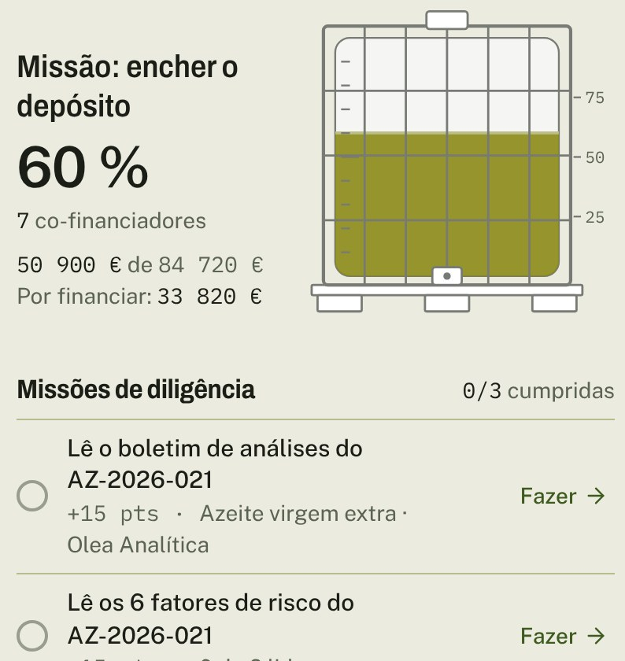
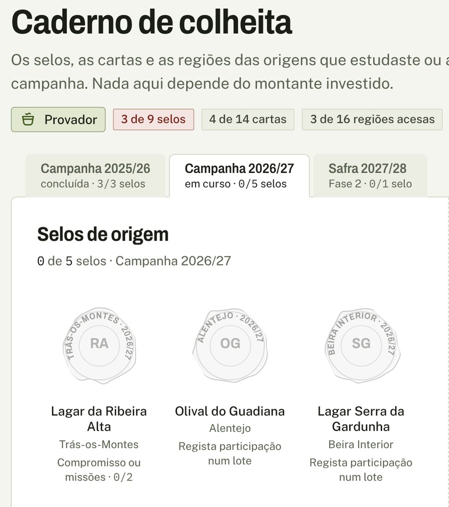
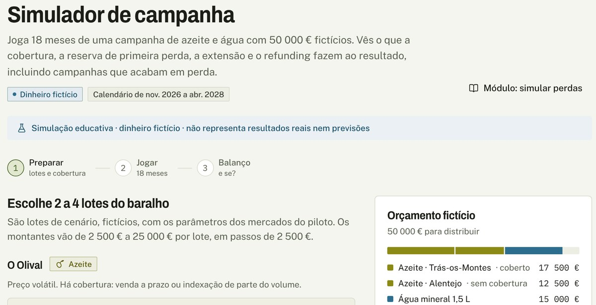

Lotes de azeite português verificados, vendidos back-to-back e financiados por obrigações a investidores profissionais, com uma app de investimento em que o jogo vive na colheita e no saber, nunca no dinheiro.
Tal como foi descrito a 13/10, o negócio não chega ao break-even até 2031 em nenhum cenário. No caso base, o EBITDA de 2031 é de −1,22 M€ e o capital próprio necessário passa os 5,5 M€, ainda a subir.
O desenho que a investigação recomenda reduz o prejuízo de 2031 para −0,53 M€ e a necessidade de capital para 4,0 M€. Também não fecha dentro do horizonte. Este plano pede o dinheiro de um piloto que compre informação, 1,1 M€ de pré-seed, com um gate a 31-08-2027 e regras de paragem escritas antes de começar.
Pessimista, base e otimista são a tese do documento-fonte (HoReCa e distribuição com desconto de 10–15 %, água como segundo produto, obrigações a 18 meses) com as 53 correções verificadas aplicadas, sem retoques. Recomendado é o desenho reestruturado que a investigação aponta (capítulo 3); cada pressuposto alterado está listado, com fonte, em pressupostos.json e no capítulo 13.
Euros correntes, sem IVA. Azeite em kg (1 L = 0,916 kg) e t; água em paletes de 750 L. Anos 2027–2031; preços das mercadorias constantes ao nível de out. 2026, porque o modelo compra back-to-back. «k€» = milhares de euros. Data de referência: 13-10-2026.
O Sprout descrito a 13/10 (desconto de 10–15 % à HoReCa pago com «80–90 % da margem do embalador», água como segundo produto, obrigações a 18 meses) não chega ao break-even até 2031 em nenhum cenário. O desenho recomendado, que muda o produto, os canais e o tamanho da equipa, chega mais perto, mas também não fecha dentro do horizonte. A decisão que se pede agora é financiar um piloto de seis meses que meça os dois preços de que tudo depende.
Os lagares portugueses vendem granel abaixo do custo do olival tradicional: o AOVE na origem estava a 3,05–3,36 €/kg a 13/10/2026, −66 % desde o máximo de jan. 2024, contra custos de produção de 2,81–4,61 €/kg 00 §1.2. Vendem a embaladores com escala, pagam-lhes a 30–60 dias quando a lei o impõe e não têm forma de tornar o stock financiável: um tanque de azeite não é colateral se ninguém o verifica.
Do outro lado, a HoReCa média e alta compra azeite de marca ou de cash & carry sem lote nem origem, e os investidores que querem um ativo físico só encontram, ao alcance do retalho, produtos do tipo Afinsa ou barris de whisky 00 §8.
O Sprout ganha a margem de contribuição de cada lote, em €/kg, por canal. Num lote HoReCa de 20 t em regime: 0,347 €/kg (6,8 %) com referência de 5,65 €/kg; 0,609 €/kg (11,3 %) com 6,00 €/kg documentados. Distribuidores: 0,064 €/kg (base) a 0,155 €/kg (com prémio de origem). Granel certificado: 0,035 €/kg Modelo.
A tese literal não fecha: capturar 85 % da margem líquida do embalador dá 0,25 €/kg; o desconto de 10 % custa 0,565 €/kg, 2,24 vezes mais, e o lote fica em −0,62 €/kg Modelo · 6.5.
| Cenário | GMV 2031M€ | Margem de contrib. 2031k€ | EBITDA 2027k€ | EBITDA 2031k€ | Capital próprio necessárioM€, até 2031 |
|---|---|---|---|---|---|
| Pessimistatese da fonte, preços baixos | 2,82 | −79 | −709 | −931 | 4,57 |
| Basetese da fonte, corrigida | 11,14 | 381 | −711 | −1 220 | 5,51 |
| Otimistatese da fonte, referência 6,00 | 17,47 | 1 458 | −706 | −906 | 5,13 |
| Recomendadodesenho reestruturado | 22,48 | 698 | −586 | −530 | 4,02 |
Nenhum cenário chega ao break-even até 2031. Capital próprio necessário = pré-arranque, capital social da SPV, caixa mínima e o vale do cash flow acumulado; em todos os cenários ainda está a subir em 2031. O recomendado com todas as alavancas no topo do que a investigação suporta fica com EBITDA de 2031 de −47 k€ e capital de 3,08 M€, ainda sem break-even Modelo · sensibilidade.
EBITDA por cenário
k€, 2027–2031: nenhuma linha cruza o zero
Capital próprio levantado, acumulado
k€; rótulos em M€ no fim de 2031, quando a curva ainda sobe em todos os cenários
Ativos: acesso ao Lagar do Val através de Pedro Marques, com stock «quase em tempo real» (feed por entregar); parceiro jurídico (Gonçalo Almeida); um protótipo da webapp com dados fictícios; investigação verificada e um modelo financeiro reprodutível.
Ainda não há receita, clientes, contratos com lagares, cotações de referência, responsável de Risco, SPV registada nem parecer jurídico. A tração começa no piloto.
Pré-seed de 1,1 M€ até 31-01-2027 (ou 0,8 M€ mais um compromisso firme de bridge de 0,3 M€). Financia o pré-arranque e o capital da SPV (145 k€), a fase 0, o piloto de fev.–jul. 2027 e o gate de 31-08-2027 (gasto até ao gate: 653 k€ no recomendado), com 150 k€ de caixa mínima: 16,4 meses de runway Modelo.
Seed só se o piloto mudar os pressupostos (cap. 14). Obrigações: 1.ª série de 150 k€ em nov. 2027–jan. 2028, só para profissionais.
Resultado no modelo: EBITDA de −586 k€ em 2027 e −530 k€ em 2031, GMV de 22,5 M€ em 2031, capital próprio de 4,02 M€ e ainda a subir. Sem break-even até 2031. Para fechar o buraco de 2031 com uma só alavanca seria preciso +0,30 €/kg dos distribuidores, uma referência HoReCa de 8,90 €/kg, 21 900 t de granel, −45 % de custos fixos ou uma carteira de verificação de 31,5 M€ (modelada: 5 M€) Modelo · recomendado.
O documento-fonte vê o problema como uma margem gorda presa no embalador. Os dados dizem outra coisa: a margem do embalador é pequena e volátil. O que a cadeia paga mal é a liquidez do produtor, a verificação do lote e a origem.
Não há estudo português de cadeia de valor do azeite publicado; a referência é o Observatorio de la Cadena Alimentaria espanhol (MAPA/Universidade de Jaén), com três campanhas 00 §1.4. Em 2019/20, de um preço ao público sem IVA de 3,544 €/kg, o granel levou 59,7 %, o embalamento 0,470 €/kg e a margem líquida do embalador 0,499 €/kg (14,1 %). Foi um ano excecional: em 2018/19 a mesma margem foi de 0,187 €/kg (4,9 %) e em 2020/21 de 0,206 €/kg (5,6 %).
Em 2020/21 a distribuição perdeu 0,231 €/kg no AOVE, que usa como produto-chamariz, e o lagar ficou com 0,001 €/kg. Os embaladores grandes vivem de escala, não de sobrepreço: a Deoleo teve EBITDA de ~6,1 % das vendas em 2025 (~821 M€) e a Sovena ~5,5 % em 2024 (~1,8 mil M€) 00 §1.5. Num preço de 4–5 €/kg, 5–6 % de EBITDA são 0,20–0,30 €/kg, coerente com o Observatorio.
Para onde vão os 3,544 €/kg do AOVE na prateleira (Espanha, 2019/20)
€/kg sem IVA. Em destaque, a margem líquida do embalador no seu melhor ano do estudo.
«Capturar 80–90 % da margem do embalador» vale 0,15–0,45 €/kg. Um desconto de 10 % sobre a referência HoReCa estimada de 5,65 €/kg custa 0,565 €/kg 00 §1.4. O que pode pagar um desconto é o diferencial completo entre o granel e a prateleira: 0,65 €/kg contra a marca branca espanhola em 5 L, 1,23 €/kg em 1 L e 2,24 €/kg contra a média do retalho português de mar.–abr. 2026.
Esse diferencial é sobretudo custo (embalamento de 0,47–0,51 €/kg, logística, marca, risco de preço), não renda de intermediário. Só há margem para o Sprout com produto diferenciado vendido contra referências de marca portuguesa e de cash & carry. Contra a marca branca espanhola (3,99–4,57 €/kg sem IVA), o desconto é aritmeticamente impossível 10 §1.7.
O desconto custa mais do que toda a margem do embalador
€/kg; diferenciais granel → prateleira com o granel a 3,34 €/kg (ES, out. 2026) e 4,43 €/kg (PT, abr. 2026)
O documento-fonte compara-se aos combustíveis, «travados por middlemen e comissões absurdas». Em Portugal, o combustível é um oligopólio verticalmente integrado (refinação só na Galp desde que Matosinhos parou em 2021; logística primária partilhada) e cerca de metade do preço são impostos [C,M] 50 §7. Não é uma cadeia de comissões, e no azeite os dados mostram margens pequenas no embalador e negativas na distribuição. Um investidor que conheça o setor desmonta a analogia em dois minutos.
As analogias que servem: o «clube fechado» do azeite é o acesso à prateleira (concursos de marca branca, cabaz do cash & carry, exclusividades na HoReCa); o mercado fechado que funciona é o Liv-ex (membros admitidos, contratos padronizados, custódia, índices); e o ciclo de 18 meses existe no en primeur de Bordéus, que trava quando os preços caem, exatamente o regime atual do azeite, −63 % desde o pico 50 §2.3.
| Lado | O que dói (verificado) | O que o Sprout resolve | O que não resolve |
|---|---|---|---|
| Lagares | Granel a 3,05–3,36 €/kg contra custos de 2,81–4,61 €/kg; prémio AOVE–lampante comprimido em 0,24 €/kg (0,75 um ano antes); poucos compradores com escala; stock sem verificação não é colateral 00 §1.2 | Pagamento em ≤ 30 dias por SCT Inst; lote individualizado, analisado e telemetrado que pode servir de garantia; prémio de origem de 0,10–0,15 €/kg | O nível de preço: o Sprout compra ao índice (SIMA + Poolred) mais um prémio, nunca acima do mercado |
| HoReCa média e alta, gourmet | Azeite sem lote nem origem; 74 524 empresas de restauração, 91 % micro; só 11 % pagam a horas, atraso médio de 30 dias 00 §4 | AOVE de origem identificada com ficha analítica, ~10 % abaixo de uma referência documentada; entrega por 3PL; SDD B2B | O cabaz completo e a entrega diária, que ficam com o distribuidor; não compete no 5 L standard |
| Distribuidores e exportadores | Compram ao embalador a 4,16–4,51 €/kg sem origem verificada 00 §1.4 | Lote verificado e prazo, ao preço de saída do embalador, com offtake | Preço: não há desconto possível; o prémio de origem está por provar |
| Investidores | Fora dos mercados cotados, o «ativo palpável» acessível ao retalho é a zona dos precedentes Afinsa, Asset Land e whisky 00 §8 | Obrigações com garantia sobre lotes e recebíveis, custódia independente e reporte por lote, só para profissionais | O retalho («jogadores»): só mais tarde, via plataforma ECSP de terceiros |
Não conhecemos na Ibéria um sítio onde um lote de azeite português seja verificado, custodiado, precificado e financiável ao mesmo tempo [I] 50 §9. É esse o espaço: um Liv-ex do azeite com collateral manager, índice ancorado no SIMA e no Poolred, e pagamento rápido ao lagar.
A venda fracionada à HoReCa é pequena: o SOM a 36 meses é de 1,7–8 M€ de GMV [E]. Os bolos grandes estão a montante: o granel português vale ~0,6–0,77 mil M€ a preço de origem e a exportação passou 1 000 M€ em 2024; Portugal tem 62 % das importações de azeite do Brasil 00 §1.7 · 10 §5. O teste do fosso: daqui a 24 meses, um banco aceita um lote «certificado Sprout» como colateral com melhor advance rate do que um lote não certificado?
Um marketplace fechado que compra azeite só quando já o vendeu, uma SPV que financia esse stock com obrigações de cupão fixo, e uma app que mostra ao investidor os lotes físicos por trás da sua série. Os dois negócios, mercadoria e capital, ficam juridicamente separados desde o primeiro dia.
| Lado | Quem | O que dá | O que recebe | Contrato |
|---|---|---|---|---|
| Produtores | Lagares do Alentejo e de Trás-os-Montes: Lagar do Val e mais dois; engarrafadores com captação reconhecida pela DGEG | Lote individualizado, ficha analítica, embalamento no lagar, telemetria do tanque | Índice (média de 2 semanas SIMA + Poolred) mais prémio de origem; pagamento em ≤ 30 dias por SCT Inst | Compra; depósito tripartido; força maior com lista fechada |
| Compradores B2B | HoReCa média e alta, lojas gourmet, distribuidores foodservice, exportadores | Encomenda firme ou offtake; mandato SDD B2B | HoReCa: origem rastreável ~10 % abaixo da referência documentada. Distribuidores: preço de saída do embalador, lote verificado, prazo | Condições gerais de venda; offtake acima de 10 t |
| Financiadores | Desde a 1.ª série (nov. 2027–jan. 2028): clientes profissionais. Fase 2: banco parceiro para stock de terceiros | Capital para stock e recebíveis | Cupão fixo de 8 % em 2028, 7,5 % em 2029 e 7 % desde 2030 (base e recomendado), garantido pelos lotes e pela cessão de recebíveis; sem exposição ao preço do azeite | Termos e condições das obrigações; representante comum |
| Plataforma | Sprout Marketplace (OpCo), Sprout Capital, SA (SPV), collateral manager independente | Curadoria, verificação, custódia, logística, crédito, ledger e reconciliação diária | Margem de principal no azeite; comissão de agente na água; comissões de verificação (fase 2) | — |
Fonte: 01 §1.3. O azeite é comprado e revendido pela OpCo como principal (é a única forma de capturar parte do diferencial granel → prateleira); a água fica em modelo de agente com faturação direta do engarrafador ao comprador, sem fundos de terceiros nas contas do Sprout.
| Dia | Evento | Dinheiro |
|---|---|---|
| D−30 | Offtake de distribuidores e encomendas HoReCa cobrem ≥ 85 % do lote; análise de pré-compra | — |
| D0 | Tanque selado, inspeção de entrada, ficha do lote; propriedade passa para a SPV | Compromisso de pagamento |
| D0–D90 | Distribuidores levantam paletes (até D60); parte HoReCa embalada por tranches e entregue via 3PL | — |
| D30 | Pagamento ao lagar | SCT Inst, SPV → lagar |
| D35–D125 | Cobranças por SDD B2B ou SCT com referência RF | Cascata diária |
| D125 | Lote fechado; capital reutilizado ou amortizado. Com < 300 clientes HoReCa, a parte HoReCa pode ir até ~D215 | Cash sweep |
| M12 / M18 | Reembolso esperado da série / vencimento legal, com uma extensão condicionada | SPV → investidores |
Os 18 meses mudaram de sítio. O produtor tem de ser pago em ≤ 30 dias (perecíveis) ou ≤ 60 dias (restantes produtos agroalimentares), Dir. 2019/633 e DL 118/2010, na redação do DL 76/2021 00 §5. Segurar azeite 18 meses custa ~20 % em carry e arrisca 37–57 % em preço [E]; não há futuros para o cobrir. Por isso «18 meses» passa a ser só o vencimento legal das obrigações: esperado em M12 (uma campanha), com uma extensão condicionada até M18.
No piloto (fev.–jul. 2027) o calendário é o mesmo, mas sem série: o lote é pago com capital próprio, porque a SPV só pode emitir 12 meses depois do registo (CSC art. 348.º/2 [L]).
| Documento-fonte | Desenho recomendado | Porquê |
|---|---|---|
| «80–90 % da margem do embalador» | Margem de contribuição em €/kg por canal, e EBITDA | A margem do embalador (0,19–0,50 €/kg) não paga o desconto (cap. 6) |
| «10–15 % de desconto ao cliente» | Até 10 %, só HoReCa/gourmet, contra referência documentada; 0 % a distribuidores e exportadores | Com 15 %, a margem HoReCa cai para 0,07 €/kg no base |
| HoReCa com azeite standard; água como 2.º produto | Azeite de origem identificada (DOP, monovarietal, ficha, lagar âncora); água só no cabaz, como agente | O 5 L standard é o chamariz do cash & carry; a água não tem embalador a desintermediar |
| — | Granel certificado back-to-back (0 → 3 500 t) e exportação embalada como alavanca de escala | Os bolos grandes estão a montante (cap. 5) |
| Café como 3.º mercado | Adiado para 2030; sourcing de verde em EUR, ICE só acima de 50–100 t/ano, conformidade EUDR | HoReCa presa a comodatos; EUDR a 30-12-2026 |
| «Ciclo de 18 meses», «refunding» | Vencimento esperado M12, legal M18; reserva de 1.ª perda, extensão, cash sweep, refinanciamento voluntário | Prazos legais ao produtor; «reembolso garantido» é captação de fundos reembolsáveis |
| «Hedge funds / taxas de cobertura» | Back-to-back, indexação SIMA + Poolred, offtake, limites de stock aberto | Não há futuros de azeite desde o fecho do MFAO (2016–17) |
| HNWI e «jogadores» | Só profissionais na 1.ª série; retalho só mais tarde, como promotor numa ECSP de terceiros | Reserva bancária, PRIIPs, precedentes Afinsa e Asset Land (cap. 7) |
| Equipa a 17 FTE em 2031 | 5,5 → 12 FTE, contratações presas aos gates | A margem por kg não paga a estrutura do base |
A webapp é uma app de investimento gamificada em que o jogo vive na colheita e no saber, nunca no dinheiro. O investidor aprende o mercado, acompanha lotes físicos e joga campanhas com dinheiro fictício. Quando compromete dinheiro real, a app fica séria, lenta e neutra.



| Peça | O que é | Como se avança |
|---|---|---|
| Mundos | O Olival (azeite), A Nascente (água), A Plantação (café, visível como fase 2 e não investível), cada um com mapa de origens e vocabulário próprio | Explorar origens e aprender; o mapa marca «por explorar», «aprendido» e «participado» |
| Estações | A campanha agrícola é a estação: colheita out.–jan., armazenagem e vendas fev.–set.; o Diário de campanha mostra eventos dos produtores e leituras de telemetria | O tempo passa sozinho; não há nada a «manter vivo» |
| Lotes como missões | Cada lote tem um medidor físico (IBC, palete, sacas) e uma jornada: colhido → analisado → em depósito → em venda → expedido → liquidado | Missões de diligência: ler o boletim de análises, os fatores de risco, a ficha do lagar |
| Caderno de colheita | Selos de origem em lacre, um por produtor × região × campanha | Ganham-se por compromisso ou por missões de diligência; nunca por montante |
| Níveis de conhecimento | Aprendiz → Provador → Lagareiro → Mestre de campanha | Só por aprendizagem e diligência |
| Mini-jogos | Painel de prova, Lê o rótulo, Da cereja à chávena: conteúdo real sobre categorias, defeitos e rotulagem | Pontos de conhecimento, separados de qualquer saldo |
| Simulador de campanha | O único sítio onde retorno e risco se jogam, com dinheiro fictício: cobertura, reserva de 1.ª perda, extensão e perdas. Liga opcional, com pseudónimo, ordenada pela pontuação de gestão do risco e não pelo resultado | Campanhas jogadas, balanço «e se?» |
Com dinheiro real, a app muda de registo. O ritual tem cinco passos: ler os fatores de risco do lote; ver o montante traduzido em mercadoria (quantos kg, que tanque); manter premido para confirmar, sem botão de um clique; um selo de lacre que regista o compromisso; e próximos passos calmos (transferência SEPA para a conta segregada da série). Todas as vistas com dinheiro real levam a nota «capital em risco · liquidação prevista não garantida» e linguagem neutra: «montante financiado», «liquidação prevista», nunca «lucro».
Bastidores é a vista da equipa, com os mesmos números que os investidores veem: indicadores do piloto contra as metas do gate (cap. 14); risco (preço de mercado contra contrato, gatilhos, PnL por lote, concentração); tesouraria (reconciliação D+1, breaks, pagamentos a aprovar com quatro olhos); compliance (casos KYC/KYB, pré-check de enquadramento do produto); o motor de missões; e uma revisão da gamificação que lista cada mecânica e a sua classificação de risco antes de cada release.
A ESMA identificou a gamificação, os empurrões (nudging), as notificações push e os dark patterns como riscos de proteção do investidor (ESMA35-43-3682, dez. 2023); as orientações de product governance pedem que se avalie se a gamificação serve o mercado-alvo. A IOSCO publicou em 19-05-2025 boas práticas sobre práticas de envolvimento digital e gamificação. A CMVM avisou que um disclaimer não basta 00 §5 · 20 §6.
Para o emitente que vende as próprias obrigações, a publicidade tem de ser exata e não enganosa (Reg. 2017/1129, art. 22.º; CVM, art. 7.º [L]); se houver intermediário, aplica-se a MiFID II, art. 24.º(3), e o Reg. Del. 2017/565, art. 44.º. Mecânicas com prémio aleatório ligado a dinheiro podem cair no regime do jogo (DL 66/2015) [L]. A Estratégia de Investimento de Retalho, com aplicação estimada em ~2029 [E], vai apertar estas regras.
| Mecânica | No conhecimento e no simulador | Com dinheiro real |
|---|---|---|
| Pontos, níveis, selos | Sim: por aprendizagem e diligência | Proibido ligá-los a montantes investidos |
| Rankings e comparação social | Só a liga do simulador: opcional, pseudónimo, ordenada pela gestão do risco | Proibido: a carteira mostra os lotes do investidor e mais nada |
| Streaks, confetes, celebrações | Não | Proibido |
| Contagens decrescentes, escassez («faltam 2 vagas») | Não | Proibido |
| P&L verde/vermelho a piscar; roletas, caixas-surpresa | Não | Proibido |
| Retornos prometidos ou «garantidos» | O simulador mostra ganhos e perdas fictícios, rotulados | Proibido; só «cupão fixo», «capital em risco» |
O art. 21.º do Reg. (UE) 2020/1503 exige que uma plataforma de crowdfunding faça ao investidor não sofisticado um teste de conhecimentos e uma simulação da capacidade de suportar perdas (10 % do património líquido), com aviso acima do maior de 1 000 € ou 5 % do património 00 §5. O Simulador de campanha cumpre o espírito dessa regra: obriga a jogar perdas, extensões e choques de preço antes de se investir.
Não a substitui. Na fase 1 só há investidores profissionais e não há ECSP; quando o retalho entrar (fase 3, via plataforma ECSP de terceiros), o teste e a simulação legais são da plataforma, não do Sprout. O simulador é educação e diferenciação de marca, não conformidade.
As capturas acima são do protótipo publicado. A mecânica de jogo está certa; a mecânica financeira ainda é a da tese original, e contradiz este plano:
Três mercadorias, três economias diferentes. O azeite tem valor por kg, risco de preço sem cobertura em bolsa e um diferencial granel → prateleira que pode pagar uma margem. A água tem baixa densidade de valor e nenhum embalador a desintermediar. O café tem cobertura em bolsa, mas a margem está na torra e a HoReCa está fechada.
| Produção, kt | Mundo | UE | Espanha | Portugal |
|---|---|---|---|---|
| 2022/23 (seca) | 2 570 | 1 390 | ~660 | ~126 |
| 2024/25 | 3 572 | ~2 100 | 1 421 | 177 |
| 2025/26 | 3 440 | 2 056 | 1 298,5 | ~175 [E] |
| 2026/27, previsão | n.d. | n.d. | 1 602,6 | ~+10 % |
COI, AICA, MAPA (1.º aforo de 02-10-2026: +23 %), Olivum e Governo. PT 2025/26 = ponto médio de 160 (Olivum) e 179 (Governo); sem publicação INE localizada. Existências finais da UE em 2025/26: ~420 kt. 00 §1.1
Portugal é o 3.º ou 4.º produtor da UE e o 2.º ou 3.º exportador; o Alentejo faz ~85 % da produção e o autoaprovisionamento é de 247,9 %, o que dá um consumo aparente de ~65–71 kt [I]. As exportações passaram 1 000 M€ em 2024. Em volume, o 1.º destino é Espanha (37 %, sobretudo granel); o embalado com marca vai para o Brasil, onde Portugal tem 62 % das importações (vendas +20 % em 2025/26) 00 §1.7 · 10 §1.2.
AOVE na origem, €/kg
Observações 2022–2026; faixa: custo de produção em Espanha
O risco de preço domina qualquer margem. De abr. 2022 a jan. 2024 o AOVE subiu 160 % (3,45 → 8,988 €/kg); desde o pico caiu 63–66 %; a pior janela de ~15 meses para quem estava comprado perdeu 57 %. A volatilidade anualizada estimada é de 23 % no regime atual e 42 % em 2022–26, o que dá um VaR a 95 % de 37–57 % do valor do stock a 18 meses [E] 00 §1.6. O mercado de futuros (MFAO, Jaén) iniciou a dissolução em 2016 e o código de mercado expirou em jan. 2017: não há onde cobrir.
O momento. Com 1,6 Mt previstas em Espanha, os preços de origem devem manter-se baixos no inverno de 2026/27 [I]. É bom para contratar compras back-to-back e para convencer lagares que vendem abaixo do custo do olival tradicional (até 4,61 €/kg; limiar de ~5 €/kg segundo a OliveA); é mau para qualquer promessa de valorização de stock a investidores.
Portugal engarrafou ~2 000 M L em 2025, num mercado de 479 M€ (~0,24 €/L) 00 §2; consumo de 182 L por pessoa (Continente, 2024); 19 empresas da APIAM fazem 85 % do setor. A água mineral natural e de nascente tem de ser embalada na origem (Dir. 2009/54/CE): o produtor é o embalador, não há elo a desintermediar. A logística pesa 20–40 % do valor ex-fábrica [E], o depósito do SDR é de 0,10 € por embalagem desde 10-04-2026 e o IVA é de 13 % segundo a AT. Num lote de 20 paletes, o Sprout como agente a 2 % ganha 108 €; como principal com 10 % de desconto ganharia 637 €, mas teria de adiantar 1 000 € de depósitos SDR Modelo. Fica como produto de cabaz para clientes HoReCa já ativos.
O Arabica (ICE KC) bateu ~4,30–4,41 USD/lb em fev. 2025 e estava em 2,85 USD/lb a 09-10-2026 (−24 % homólogo); o Robusta, em 3 470 USD/t 00 §3. O setor português de torrefação faturou 695 M€ em 2024 (92 empresas); o grupo Nabeiro-Delta, 650 M€ em 2025. O grão verde vale ≤ 10 % do valor de retalho mundial, e a HoReCa portuguesa está presa a contratos de comodato de equipamento com exclusividade e compra mínima. O EUDR aplica-se a 30-12-2026 (grandes e médios) e 30-06-2027 (micro e pequenos). No recomendado, o café entra em 2030 (20 → 50 t) como sourcing de verde para microtorrefatores.
Há 74 524 empresas de restauração em Portugal (2024; 91 % micro, 324 130 trabalhadores). A HoReCa compra em cash & carry (Recheio, ~1,4 mil M€ em 2025) e a grossistas de foodservice (1 100 M€ em 2021; 38 empresas no estudo de jan. 2026), que vendem o cabaz completo com crédito e entrega 00 §4. O Sprout não concorre com esse cabaz; vende um produto de origem que o cabaz não tem.
Só 20,2 % das empresas portuguesas pagam a horas (UE: 52 %); no alojamento e restauração, 11 %, com atraso médio de 30 dias; ~66 mil empresas estão em risco de atrasos acima de 90 dias. Daí SDD B2B obrigatório e pré-pagamento nas três primeiras encomendas. Foco: Portugal primeiro. Em Espanha (consumo interior de ~496 kt em 2024/25; mais de 300 000 estabelecimentos de hotelaria) a desintermediação já foi feita pelas cooperativas de 2.º grau (Dcoop) e a lei da cadeia alimentar exige preço acima do custo do produtor 10 §4 · 40 §1.2.
| Camada | Componente | Método | Valor anual |
|---|---|---|---|
| TAM PT | Azeite, consumo aparente | 65–71 kt [I] × 6,67 €/kg (retalho sem IVA) | ~430–475 M€ |
| Água engarrafada | DGEG 2025 | 479 M€ | |
| Café | Informa D&B 2024 | 695 M€ | |
| SAM PT | Azeite HoReCa e retalho independente | Quota HoReCa de 20–30 % [E, NV] → 13–21 kt × 4,5–5,5 €/kg | ~58–117 M€ |
| Água fora do lar | 17 % fora do lar (proxy Espanha) × ~1 960 M L × 0,30–0,50 €/L [E] | ~100–168 M€ | |
| SAM Ibéria | Azeite + água | Espanha: 496 kt × 20–30 % × 4,0–4,5 €/kg; 613 M L fora do lar × 0,30–0,50 €/L | ~0,7–1,25 mil M€ |
| SOM PT, 36 meses | 1 000–2 000 clientes HoReCa | Azeite 150–300 L e água 3 000–5 000 L por cliente por ano [E] | ~1,7–8 M€ GMV |
| Montante | Granel PT e exportação embalada | ~175 kt × 3,4–4,4 €/kg; exportações de 2024 | ~0,6–0,77 mil M€; > 1 000 M€ |
Todas as linhas são estimativas [E] da nota 10 §5, a refazer a cada campanha. O modelo fica dentro destes limites: no base, 2 000 clientes HoReCa e 2 200 t em 2031 (1,26 % da produção PT); no recomendado, 1 000 clientes premium e 5 495 t, das quais 3 500 t de granel certificado (2 % da produção) Modelo. A venda fracionada à HoReCa sozinha não sustenta uma estrutura com SPV, investidores e equipa: a escala está no granel e na exportação.
Economicamente, o Sprout é um distribuidor especializado com verificação de lotes, de margem baixa. Ganha por kg, por canal, e só ganha bem num canal: azeite de origem identificada vendido à HoReCa média e alta contra uma referência documentada. A tese mede-se em €/kg e em EBITDA, não em «% da margem do embalador».
| Fonte de receita | Mecânica | Início | Base 2031k€ de margem | Recomendado 2031k€ de margem |
|---|---|---|---|---|
| Azeite HoReCa/gourmet (principal) | Venda a 90 % da referência documentada; custos diretos e cupão deduzidos | 2027 | 148 | 128 |
| Azeite distribuidores e exportação (principal) | Preço de saída do embalador, sem desconto; recomendado: +0,10 €/kg de prémio de origem | 2027 | 120 | 283 |
| Granel certificado (principal, back-to-back) | Comprado ao índice, vendido a embaladores e exportadores a índice + 0,15 €/kg; lotes de 100 t | 2028 (rec.) | 0 | 126 |
| Café verde (principal) | Compra em EUR a importador UE; venda a microtorrefatores | 2029 / 2030 | 55 | 27 |
| Água (agente) | Comissão de 2 % do GMV, faturada ao engarrafador; sem stock nem fundos de terceiros | 2027 | 10 | 5 |
| Verificação para terceiros | 0,75 % por utilização × 2 + 0,5 %/ano da carteira de um banco parceiro; no recomendado o banco paga a custódia | 2028 | 18 | 100 |
| Dados e índice | Subscrição de preços de lotes verificados | 2030 | 30 | 30 |
| Margem de contribuição total | 381 | 698 |
O que não cobramos: comissões de gestão ou de desempenho aos investidores. Cobrar «spread retido» a quem financia é cobrar como gestor de ativos e reforça a leitura de organismo de investimento coletivo 01 §6.1. No recomendado, a margem média do azeite em 2031 é de 0,098 €/kg, abaixo dos 0,122 €/kg do base, porque o granel certificado dilui a média; o EBITDA melhora pela estrutura mais leve e pelos serviços.
| Lote HoReCa/gourmet de 20 t, regime de 2029 | Base€/kg | Base€ por lote | Recomendado€/kg | Recomendado€ por lote |
|---|---|---|---|---|
| Valor à referência | 5,650 | 113 000 | 6,000 | 120 000 |
| Desconto ao comprador | −0,565 | −11 300 | −0,600 | −12 000 |
| Receita (preço Sprout) | 5,085 | 101 700 | 5,400 | 108 000 |
| Granel ao lagar (índice + prémio) | −3,600 | −72 000 | −3,650 | −73 000 |
| Embalamento | −0,550 | −11 000 | −0,550 | −11 000 |
| Logística | −0,280 | −5 600 | −0,280 | −5 600 |
| Armazém 3PL e picking | −0,060 | −1 200 | −0,060 | −1 200 |
| Armazenagem | −0,006 | −120 | −0,006 | −120 |
| Seguro do stock | −0,001 | −18 | −0,001 | −18 |
| Análises | −0,030 | −600 | −0,030 | −600 |
| Perdas físicas | −0,018 | −360 | −0,018 | −365 |
| Desclassificação esperada | −0,004 | −90 | −0,004 | −90 |
| Custódia (collateral manager) | −0,100 | −2 000 | −0,100 | −2 000 |
| Pagamentos bancários | −0,010 | −200 | −0,010 | −200 |
| Provisão de crédito | −0,030 | −610 | −0,032 | −648 |
| Cupão das obrigações | −0,048 | −959 | −0,049 | −971 |
| Margem de contribuição | 0,347 | 6 943 | 0,609 | 12 188 |
| Margem em % da receita | 6,8 % | 11,3 % | ||
| Obrigações afetas ao lote · cupão do ciclo (50 dias) | 93 375 · 959 | 94 500 · 971 | ||
| Retido na reserva de 1.ª perda · margem livre para a OpCo | 2 083 · 4 860 | 3 656 · 8 532 |
Regime de 2029: stock médio de 45 dias, ciclo líquido de 50 dias, obrigações a 90 % do capital empregue com utilização de 80 %, cupão de 7,5 %/ano. Recomendado: referência de 6,00 €/kg de origem identificada (por verificar) e prémio de 0,15 €/kg ao lagar. Modelo · Unit economics · 01 §2.2
Para onde vão os 5,65 €/kg da referência no lote base
€/kg sem IVA, desconto de 10 %. A barra de baixo amplia o bolo de intermediação: o que hoje fica com embalador, distribuidor e retalhista.
Do lado do investidor. No lote base, 83 000 € ficam imobilizados durante ~50 dias. Estão-lhe afetos 93 375 € de obrigações (o excedente fica em caixa na série) e o cupão do ciclo é de 959 €: 7,5 %/ano bruto, ~5,4 % líquido para um particular residente, com retenção de 28 % [L]. Os 10 % de capital subordinado (8 300 €) são do patrocinador.
O investidor não ganha nem perde com o preço do azeite enquanto a almofada (margem do lote, reserva de 1.ª perda, subordinado) absorver as perdas: é um credor colateralizado, não um dono de stock. É isso que mantém o produto fora das leituras de derivado e de organismo de investimento coletivo (cap. 7).
| €/kg, regime de 2029 | HoReCa 20 tbase | HoReCa 20 trecom. | Distrib. 30 tbase | Distrib. 30 trecom. | Granel cert. 100 trecom. |
|---|---|---|---|---|---|
| Preço de venda | 5,085 | 5,400 | 4,350 | 4,450 | 3,650 |
| Granel ao lagar | −3,600 | −3,650 | −3,600 | −3,600 | −3,500 |
| Embalamento + logística + 3PL | −0,890 | −0,890 | −0,540 | −0,540 | −0,040 |
| Armazenagem, seguro, análises, perdas, desclassificação | −0,059 | −0,060 | −0,046 | −0,046 | −0,027 |
| Custódia + pagamentos + provisão de crédito | −0,141 | −0,142 | −0,058 | −0,058 | −0,024 |
| Cupão das obrigações | −0,048 | −0,049 | −0,042 | −0,051 | −0,024 |
| Margem de contribuição | 0,347 | 0,609 | 0,064 | 0,155 | 0,035 |
| Margem em % do preço | 6,8 % | 11,3 % | 1,5 % | 3,5 % | 0,9 % |
| Margem por lote, € | 6 943 | 12 188 | 1 927 | 4 637 | 3 449 |
Distribuidores e exportadores compram ao embalador a 4,16–4,51 €/kg; o Sprout não lhes pode dar desconto. No base, a 4,35 €/kg, o canal ganha 0,064 €/kg (1,5 %) e só não perde dinheiro acima de 4,29 €/kg. O recomendado assume um prémio de origem de 0,10 €/kg (4,45 €/kg) e 55 dias de recebimento: 0,155 €/kg. Cada 0,10 €/kg vale ~178 k€ de EBITDA em 2031 no base 01 §2.5.
Granel certificado, em lotes de 100 t comprados ao índice e vendidos a índice + 0,15 €/kg, deixa 0,035 €/kg (0,9 %). Dá escala, historial de verificação e colateral para o banco parceiro; não dá margem. No piloto, sem cupão, a HoReCa faz 0,341 €/kg e os distribuidores 0,096 €/kg (base).
A tese literal num lote HoReCa base, €/kg
Captura de 85 % da margem média do embalador nas três campanhas do Observatorio (0,297 €/kg), contra o que o lote tem de pagar
| Saldo para o Sprout, €/kg | Margem do embalador média, 0,297 €/kg | Margem de 2019/20, 0,499 €/kg | ||||
|---|---|---|---|---|---|---|
| captura 80 % | captura 85 % | captura 90 % | captura 80 % | captura 85 % | captura 90 % | |
| Desconto de 10 % | −0,64 | −0,62 | −0,61 | −0,47 | −0,45 | −0,42 |
| Desconto de 12,5 % | −0,78 | −0,76 | −0,75 | −0,61 | −0,59 | −0,56 |
| Desconto de 15 % | −0,92 | −0,90 | −0,89 | −0,76 | −0,73 | −0,71 |
As 18 combinações de captura (80, 85, 90 %), desconto (10, 12,5, 15 %) e margem do embalador (média ou a mais alta das três campanhas) dão saldo negativo. Modelo · sensibilidade
O que tem de ceder. «80–90 %» sai do deck e da app: usá-lo perante investidores seria uma afirmação enganosa (Reg. 2017/1129, art. 22.º; CVM, art. 7.º [L]). O desconto é de até 10 %, só para HoReCa e gourmet, e só contra uma referência documentada em €/kg; distribuidores e exportadores têm 0 %. O cupão (~0,05 €/kg) é custo pago pela margem do lote, não «redistribuição». No base, qualquer destas alavancas sozinha fecharia o buraco de 2031: +0,69 €/kg pagos pelos distribuidores, uma referência HoReCa de 8,99 €/kg ou −78 % de custos fixos. Nenhuma é realista (cap. 13).
O marketplace B2B não precisa de licença financeira. O produto para investidores é que decide tudo: conforme o desenho, é obrigação, derivado, organismo de investimento coletivo, captação ilícita de fundos reembolsáveis ou crowdfunding. A fase 1 usa a via mais estreita e mais limpa: obrigações de cupão fixo de uma SPV portuguesa, só para profissionais. Isto não é um parecer jurídico; os itens [L] aguardam advogado independente.
| Opção | Público | Custo inicial [E] | Prazo [E] | Decisão |
|---|---|---|---|---|
| A. Marketplace agente com PSP marketplace | Empresas | 5–20 k€ + PSP | 1–3 meses | Só na água, e sem PSP (faturação direta) |
| B. OpCo principal (compra e revende) | Empresas | Baixo | 1–3 meses | Sim, azeite |
| C. SPV PT (SA) emite obrigações | Profissionais; ≥ 100 000 € só com parecer sobre o KID | 15–40 k€ + capital 50 k€ + ~25 k€/ano + funções independentes ~30 k€/ano | Constituição 1–2 meses; 1.ª emissão ≥ 12 meses após o registo | Sim, 1.ª série nov. 2027–jan. 2028 (ou antes, com garantia bancária de custo NV) |
| D. Promotor numa plataforma ECSP de terceiros | Incluindo não sofisticados | Comissões NV + 10–20 k€ | 3–6 meses | Fase 3, só recebíveis ou lotes diferenciados; capital a 10–13 %/ano [E] |
| E. FIA com gestor (AIFM) | Profissionais | 100–250 k€ + 80–200 k€/ano | 3–9 meses | Não, abaixo de 10–20 M€ |
| F. Licenças próprias (IP, IME, ECSP) | Conforme licença | 150–500 k€ + equipa | 9–18 meses | Não |
| G. Venda direta a «jogadores» com retorno | — | — | — | Proibido (RGICSF art. 200.º) |
| H. Veículo ou token fora da UE | Na UE, os mesmos limites | Baixo à entrada | Anos para ter banca UE | Não (BVI na lista UE de alto risco desde 29-01-2026) |
| I. Banco parceiro como mutuante; Sprout origina e verifica | Lagares (crédito) | Jurídico 10–20 k€ | 4–9 meses | Fase 2 (2028): o fosso «lote financiável» |
Sprout Marketplace (OpCo, Lda ou SA): principal no azeite, agente com faturação direta na água, servicer da SPV; fatura por software certificado. Sprout Capital, SA (SPV detida pela OpCo): constituída e registada até nov. 2026, com capital social de 50 000 € (mínimo legal, CSC art. 276.º/5 [L]), um administrador independente, ROC e representante comum dos obrigacionistas (CSC art. 357.º ss. [L]); compra e detém os lotes individualizados, emite por série, uma conta bancária por série, com cláusulas de limited recourse e non-petition. O capital social é o subordinado da 1.ª série. Um collateral manager independente (SGS, Bureau Veritas, Control Union ou equivalente) detém o stock por conta da SPV; nunca o lagar âncora sozinho.
Porque não é FIA [I, a confirmar]: a SPV tem finalidade comercial (compra e vende a clientes reais, com risco comercial), paga cupão fixo e não um retorno agregado, e não tem política de investimento discricionária (ESMA/2013/611). Porque não é captação ilícita: emite obrigações nos termos e limites do CSC (exceção do RGICSF art. 9.º); esses limites incluem o art. 348.º/2 (só emite quem tem registo definitivo há mais de um ano, salvo garantia de instituição de crédito ou do Estado) [L]. Porque não é derivado: o investidor recebe juro, não diferenças de preço do azeite. Atenção ao Regulamento de Titularização (UE) 2017/2402: subordinar o patrocinador sobre recebíveis pode configurar tranching; o parecer tem de o afastar.
| Público | Permitido? | Condição |
|---|---|---|
| Profissionais per se (MiFID II, Anexo II, I) | Sim | Documentar a categoria; ticket mínimo de 25 000 € na 1.ª série |
| Profissionais a pedido | Só se já classificados | Classificação feita por banco ou empresa de investimento (2 de 3: carteira > 500 000 €, 10 transações significativas por trimestre, ≥ 1 ano no setor financeiro), com declaração escrita guardada (Reg. 2017/1129, art. 2.º, al. e) [L]). O Sprout não faz o opt-up |
| Qualquer investidor com subscrição ≥ 100 000 € | Não na 1.ª série | Dispensa o prospeto (art. 1.º(4)(d)), não o KID: quem subscreve ≥ 100 000 € sem ser profissional é retalho para os PRIIPs (Reg. 1286/2014, art. 4.º) [L] |
| «HNWI» sem estes critérios; retalho abaixo de 100 000 €; «jogadores» | Não | «Rico» não é «qualificado». Retalho só mais tarde, via ECSP de terceiros |
| Investidores fora de PT; residentes ou fundos de países da lista UE de alto risco | Não | Reverse solicitation não serve (ESMA35-43-2509); lista atualizada a 29-01-2026 |
Jurisdição. OpCo e SPV em Portugal: rails bancários UE sem risco de repatriação, 15–40 k€ e 1–2 meses para constituir [E]. Acima de 5–10 M€ de obrigações e com investidores internacionais, um veículo de titularização luxemburguês por compartimentos, sem autorização CSSF enquanto não houver emissões contínuas ao público 00 §5. Rejeitar estruturas fora da UE e tokens.
Pagamentos. Bancos portugueses: SCT Inst + VoP para pagar a produtores, SDD B2B para cobrar à HoReCa recorrente (sem direito a reembolso de cobranças autorizadas), extratos camt.053. Custo por lote de 50 000 €: 0–2 € por SEPA, contra 150 € na Lemonway e 750–900 € com Multibanco [E] 00 §6. O dinheiro de investidores vai para contas da SPV, uma por série, e nunca para carteiras de PSP: a Stripe não aceita investimento nem crowdfunding sem aprovação; a Treezor fica excluída (coima ACPR de 1 M€ em 2024, mudança de controlo em out. 2026). Lemonway e depois Mangopay só se houver fundos de terceiros (fase 2). Numerário: zero (proibido ≥ 3 000 €, LGT art. 63.º-E).
KYC/KYB/AML. Mesmo sem ser entidade obrigada da Lei 83/2017, bancos e investidores exigem esse nível: fornecedor dedicado (Sumsub ou Veriff + ComplyAdvantage para sanções, PEP e adverse media), Chave Móvel Digital, certidão permanente, RCBE e VoP; origem de fundos e de património dos investidores; screening diário; evidência guardada 7 anos. Custo no piloto: 300–1 200 €/mês [E]. O AMLR aplica-se a 10-07-2027.
Marketing. Um só deck para profissionais, rotulado como comunicação publicitária, com riscos e benefícios com o mesmo destaque e cenários adversos (quebra de colheita, desclassificação, preço −30 %); nada nas redes sociais sobre o produto de investimento; sem finfluenciadores; roadshows privados com lista fechada; nunca «garantido», «capital protegido» nem «refunding» 20 §6, §11.
| Tema | Regra | Base |
|---|---|---|
| Prospeto | Isenção abaixo de 12 M€ por emitente em 12 meses (antes 8 M€); isenções para ofertas só a qualificados, a < 150 pessoas por Estado-Membro ou com ≥ 100 000 € por investidor | CVM art. 109.º(4), DL 171/2026, desde 01-09-2026; Reg. 2017/1129, art. 1.º(4) [L] |
| Fundos reembolsáveis | Exclusivo de instituições de crédito; exceção para obrigações nos termos do CSC; crime de atividade ilícita | RGICSF arts. 8.º, 9.º, 200.º [F/L] |
| Emissão de obrigações | Registo definitivo há mais de 1 ano, salvo fusão/cisão, maioria pública ou garantia bancária; SA com capital ≥ 50 000 €, ≥ 30 % realizado na constituição | CSC arts. 348.º/2, 276.º/5, 277.º/2 [L] |
| PRIIPs | KID para retalho em produtos com montante reembolsável exposto a ativos não detidos diretamente | Reg. 1286/2014, art. 4.º [F,M]/[L] |
| Crowdfunding (ECSP) | 5 M€ por promotor em 12 meses; teste, simulação de perdas, aviso acima do maior de 1 000 € ou 5 % do património, 4 dias de reflexão, KIIS; a plataforma não pode ter interesse nas ofertas | Reg. 2020/1503, arts. 1.º, 8.º, 21.º–23.º [F,M] |
| Derivados sobre mercadorias | Liquidação em dinheiro (ou por opção de uma parte) = instrumento financeiro; entrega física real afasta-o | MiFID II, Anexo I, C(5), C(7); ESMA C6/C7 [F,M] |
| Prazos ao produtor | ≤ 30 dias perecíveis; ≤ 60 dias restantes; juros de mora BCE + 8 p.p. | Dir. 2019/633; DL 118/2010 (DL 76/2021); DL 62/2013 [F,A] |
| Pagamentos | Envio imediato e VoP obrigatórios nos PSP da zona euro desde 09-10-2025; licença de IP 20 000–125 000 €, de IME 350 000 € | Reg. 2024/886 [F,A]; Dir. 2015/2366 [L] |
| Faturação | ATCUD e QR; PDF aceite até 31-12-2026; selo eletrónico qualificado desde 01-01-2027 | OE 2026 [F,M] |
| IVA | Azeite 6 %; água mineral 13 % (informação vinculativa); café 23 % [I]; comissões 23 %; juros de obrigações: operação financeira isenta | CIVA [F]/[L] |
Antes do primeiro euro de investidor, um parecer escrito de advogado independente (não de um sócio do projeto) sobre o term sheet final, com dez perguntas (01 §3.5). Duas são go/no-go: a emissão cabe na exceção do RGICSF art. 9.º, com a redação em vigor do CSC art. 348.º/2? As obrigações são PRIIP? Até haver resposta, a 1.ª série vai só a profissionais.
Não existe «hedge» de azeite em bolsa. A cobertura do Sprout é comercial: comprar só o que já está vendido, indexar o resto, nunca vender a prazo sem físico, e manter o stock em aberto abaixo do que a almofada aguenta. O risco que a estrutura não aguenta, segurar stock 18 meses, fica proibido por política.
| Permitido | Proibido | Limites | |
|---|---|---|---|
| Azeite | Venda back-to-back a preço fixo ou indexado; compra indexada (média de 2 semanas SIMA + Poolred) ± prémio; compra a prazo só com venda casada; preço mínimo/máximo embutido em contrato físico | Derivados liquidados em dinheiro (incl. opções OTC: MiFID C(5)); cobertura cruzada com outros óleos; venda a prazo sem físico; detenção especulativa | Aberto ≤ 15 % do book no piloto; em regime ≤ min(25 %; almofada ÷ 0,30); curto = 0; idade ≤ 6 meses à entrada e ≤ 15 no balanço; lagar ≤ 50 % (piloto) e ≤ 35 % (2028+); comprador ≤ 20 % dos recebíveis |
| Café | Compra em EUR a preço fixo a importador UE operador EUDR; preço a fixar com fixação simultânea; forward EUR/USD entregável (0,1–0,5 % [E]) | ICE abaixo de 50–100 t/ano | USD em aberto ≤ 10 % das compras de 3 meses; ICE só com linha de liquidez ≥ 30 % do nocional (um contrato KC = ~17 t, ~107 mil USD) |
| Água | Contratual: preço anual indexado com teto ±5–8 %, sobretaxa de combustível, capacidade de verão | Qualquer derivado | Modelo agente: o risco de preço fica no engarrafador |
| Crédito | SDD B2B para HoReCa recorrente; pré-pagamento nas 3 primeiras encomendas; seguro de crédito desde 2028 (0,4 % das vendas no modelo) | Vendas a crédito sem mandato | DSO ≤ 35 dias; alerta a 40; suspensão a 45 |
Custo total de cobertura ≤ 30 % da margem bruta esperada; acima disso, reduz-se a exposição em vez de cobrir mais caro. O MFAO (Jaén) iniciou a dissolução em 2016 e o código de mercado expirou em jan. 2017. 00 §7 · 01 §4.1 · 40 §7
| Horizonte | Carry [E] | VaR 95 % [E] |
|---|---|---|
| 3 meses | 3,6 % | 17–29 % |
| 6 meses | 6,6 % | 24–39 % |
| 12 meses | 13,2 % | 32–50 % |
| 18 meses | 19,8 % | 37–57 % |
Carry: armazenagem 4 €/t/mês, seguro 0,2 %/ano, capital 8 %/ano, análises, perdas e desclassificação; VaR com volatilidade de 23–42 % 40 §1.3, §5.2.
Contra uma margem de lote de 6,8 % (base), segurar o stock 18 meses sem venda arrisca perder 50–70 % do lote; com a margem de ~11 % do lote recomendado, 45–65 % Modelo · risco de preço. Nenhuma almofada absorve isto. Um choque de −30 % num lote HoReCa base totalmente em aberto custa 24 900 €, 3,6 vezes a margem do lote; com 15 % em aberto, 3 735 €.
À escala de 2031, com o stock médio do modelo, um choque de −30 % custaria 242 k€ no base (90 % da margem anual do azeite) e 362 k€ no recomendado (67 %) se todo o stock estivesse em aberto; com o limite de 15 %, 36 k€ e 54 k€. Por isso o limite de stock aberto é a regra que segura o resto.
Almofada. Capital subordinado do patrocinador: 33 % da 1.ª série (os 50 000 € de capital social da SPV sobre 150 000 €) e 10 % em regime. Reserva de 1.ª perda: 30 % da margem de cada lote, até 5 % do saldo vivo, numa conta empenhada aos obrigacionistas por penhor de direitos de crédito (CC arts. 679.º ss. [L]); só será penhor financeiro se um banco for beneficiário ou agente de garantias (DL 105/2004 [L]). Cascata: margem do lote → reserva → subordinado → extensão com cash sweep → obrigacionistas sénior.
Extensão (opção do emitente): uma só, de M12 a M18, com aviso até M12 − 30 dias, gatilho objetivo (índice ≤ −20 % face à entrada, ou procura contratada < 50 % do stock a M12 − 60 dias) e teste de racionalidade validado pelo membro independente; step-up de +250 p.b., cash sweep de 100 % e distribuições ao patrocinador suspensas. Cash sweep mensal acima de 10 % de caixa livre. Refinanciamento: troca voluntária para a série seguinte; o reembolso da série antiga nunca depende da nova. Proibido: «reembolso garantido», «capital protegido», recompra prometida, liquidação em espécie a investidores 01 §4.2–4.3 · 40 §8.
| Cenário (book de 150 000 €, ~36 t, 85 % back-to-back, recebíveis de 60 000 €) | Perda | Almofada de 15 % | Almofada de 33 % (capital da SPV) |
|---|---|---|---|
| S1 · índice −30 % (15 % em aberto; 20 % dos compradores renegoceiam) | 14,4 k€ | Absorvida | Absorvida |
| S2 · quebra de colheita, preço +60 % (stock já em tanque) | 0 | O aberto ganha ~13,5 k€ | Sem perda |
| S2b · venda a prazo sem físico, preço +60 % | 90 k€ | Destrói a série | Proibido por política |
| S3 · 10 % dos recebíveis em incumprimento, recuperação de 50 % | 3,0 k€ | Absorvida | Absorvida |
| S4 · 25 % do stock desclassificado a 0,45 €/kg | 4,1 k€ | Absorvida | Absorvida |
| S5 · S1 + S3 + S4 + 3 meses de atraso nas vendas (carry de 5,4 k€) | 26,9 k€ | Sénior perde 4,4 k€ (3,4 %) | Sénior intacto; sobram 23,1 k€ |
Fonte: 01 §4.4 [E]. Num book de regime de 500 k€ (147 t, almofada de 15 %), S1 com a política custa 60 k€ (absorvido); S5 custa ~100 k€ e excede a almofada em ~25 k€ (5,6 % do sénior): ativa a extensão com cash sweep. No modelo, um preço do AOVE −30 % com repasse proporcional leva o EBITDA de 2031 para −1 814 k€ no base e −987 k€ no recomendado (cap. 13).
Contraparte. Compradores: SDD B2B, limites por cliente, seguro de crédito quando o volume diluir o prémio mínimo (0,1–0,6 % [E/NV]); 66 mil empresas portuguesas estão em risco de atrasos acima de 90 dias. Produtores: força maior com lista fechada (o art. 437.º do CC não cobre a volatilidade, risco próprio do contrato), tolerância de ±10 %, penalização de reposição e retenção de 5–10 % do preço; prova de seguro de colheitas (SIPAC) 40 §4.
Qualidade e vida útil. Limites legais do AOVE: acidez ≤ 0,8 %, peróxidos ≤ 20, K232 ≤ 2,50, K270 ≤ 0,22, painel sem defeito (Reg. Del. 2022/2104 [L]). Entrada mais exigente (K232 ≤ 2,10; peróxidos ≤ 12; frutado ≥ 2,5), análise acreditada à entrada e a cada 4 meses, venda obrigatória em 30 dias se K232 ≥ 2,30. A desclassificação não é segurável.
Custódia e fraude. Os desastres do trade finance (Greensill, Stenn, Qingdao, Hin Leong) foram de colateral, não de tecnologia. Tanques dedicados e selados, depósito tripartido, collateral manager, contagem física trimestral, confirmação independente de cada recebível, quatro olhos em IBAN e libertações; nada se financia antes de existir em tanque.
Regulatório e reputacional. Um único alerta da CMVM fecha bancos e investidores para o resto do projeto. Mitigação: parecer independente antes do primeiro euro, só profissionais, revisão de compliance de cada release da app e de cada material, e nenhum contacto com retalho.
Primeiro mede-se o preço, depois vende-se, e só no fim se levanta capital de investidores. O piloto é do tamanho da procura real, é pago com capital próprio e não tem investidores; a 1.ª série de obrigações só sai depois do gate e do prazo legal da SPV.
| Dimensão | Valor |
|---|---|
| Produtores | 3 lagares (Lagar do Val + 2, com Lagar do Val ≤ 50 % do volume) e 2 engarrafadores |
| Compradores | ~36: 25 HoReCa média e alta, 8 lojas gourmet, 3 distribuidores ou exportadores com offtake |
| Volume | 1 lote misto de 20 t de AOVE (4 t HoReCa e gourmet, 16 t com offtake, ≥ 80 % do lote) e 60 paletes de água |
| GMV alvo | ~106 k€: azeite HoReCa 20,3 k€, azeite distribuidores 69,6 k€, água 16,2 k€ |
| Financiamento | Capital próprio (capital social da SPV + OpCo); pico de ~82 k€ quando o lote é pago a D30; 0 investidores |
| Resultado esperado | Margem do azeite de ~2,9 k€ (3,2 %): o piloto prova operação e preço, não lucro |
33 clientes HoReCa a 150–300 L/ano absorvem 2,3–4,5 t em seis meses, não 20 t; o resto do lote só escoa com offtake de distribuidores 00 §10 · 01 §5.2. O ticket médio HoReCa de 150–300 €/mês (azeite + água) só vale no piloto (~211 €/mês); com o consumo assumido para 2031 cai para ~107 €/mês, porque a água por cliente desce de ~4,8 para 0,9 paletes/ano. O deck deve dizê-lo assim.
Calendário: o piloto corre em capital próprio enquanto a SPV cumpre os 12 meses
O primeiro entregável comercial não é um cliente, é uma referência: 20–30 cotações de AOVE 5 L e de azeite de origem identificada em cash & carry e foodservice (Recheio, Makro, Bidfood, Garcias, distribuidores regionais) até 31-01-2027. Com mediana abaixo de 5,65 €/kg sem IVA a margem HoReCa fica abaixo de 7 %; abaixo de 5,40 €/kg, abaixo de 3 % 00 §11. Depois: 25 contas HoReCa média e alta e 8 lojas gourmet, com prova de lote, ficha analítica e amostra; mandato SDD B2B e pré-pagamento nas três primeiras encomendas. Com distribuidores, parceria antes de concorrência: vender através deles o que o cabaz não tem. Três distribuidores ou exportadores com offtake de ≥ 10 t, e uma pergunta escrita: pagam prémio por origem verificada?
O Lagar do Val entra primeiro, com regras de parte relacionada (cap. 12): preço ao índice + prémio aprovado por terceiros, depósito tripartido, collateral manager, ≤ 50 % do volume. O feed de stock começa na semana 1 como CSV diário e passa a sensores radar até ao mês 4. Mais dois lagares do Alentejo ou de Trás-os-Montes antes da 1.ª série. O argumento junto dos lagares é o pagamento em ≤ 30 dias por SCT Inst num ano em que o granel está abaixo do custo do olival tradicional. Na água, dois engarrafadores em modelo agente; a água sai no gate se o GMV for < 12 k€ ou a comissão < 1,5 %.
Sem investidores no piloto. Para a 1.ª série, uma lista fechada de bancos privados, family offices e profissionais per se, com o deck rotulado como comunicação publicitária e aprovado no parecer. A pergunta a fazer já: que cupão pede o mercado para notas colateralizadas de trade finance a profissionais em Portugal? 00 §11, ponto 8
Minuta de aviso (sujeita ao parecer). «Comunicação publicitária destinada exclusivamente a clientes profissionais. Não constitui oferta pública nem recomendação de investimento. As obrigações da Sprout Capital, SA não são depósitos nem estão cobertas por um sistema de garantia. O capital está em risco e pode perder-se total ou parcialmente. O cupão é fixo; o reembolso depende da venda dos lotes e das garantias. O vencimento esperado é a 12 meses e pode ser prorrogado uma vez até 18 meses, nos termos e condições.»
| Fase | O que acontece | Condição de entrada |
|---|---|---|
| Fase 2set. 2027 – 2028 | Campanha 2027/28 (compras nov.–fev.); 1.ª série; RFP a banco parceiro (o Sprout origina e verifica, o banco empresta aos lagares); granel certificado back-to-back (500 t em 2028 no recomendado); RFP a PSP marketplace (Lemonway, Mangopay) se houver fundos de terceiros | Gate de 31-08-2027 cumprido (cap. 14); parecer favorável; SPV com 12 meses de registo |
| Fase 32029 em diante | Trader de granel e exportação (2029); exportação embalada para o Brasil através de importadores; café verde para microtorrefatores (2030); dados e índice; retalho só como promotor numa ECSP de terceiros (Raize tem autorização; Goparity e Miimosa a verificar), para recebíveis curtos ou lotes diferenciados, fora do horizonte do modelo | Margem por canal acima dos mínimos; ≥ 2 fontes de funding e de seguro desde a série 2; Espanha só depois de Portugal; Luxemburgo acima de 5–10 M€ de obrigações |
O produto do Sprout é a verificação: um lote só é financiável se alguém independente puder provar que existe, que tem a categoria declarada, que não está empenhado a outro e que vai ser vendido. A tecnologia serve isso, e começa pelo ledger, não pela interface.
Arquitetura de referência do piloto
Três fases: CSV diário por SFTP a partir do ERP do lagar (semana 1, com hash); API com eventos de produção, transferência, reserva e expedição (meses 1–2); sensores radar sem contacto nos tanques dos lotes, leitura a cada 15 min e envio horário (meses 2–4; 3–9 k€ para 4–6 tanques [E]). A massa (kg) é a unidade contabilística. Reconciliação diária sensor contra ERP (±0,5 %), semanal ERP contra ledger; acima de 1 %, o lote deixa de vender. Variação de nível sem ordem de saída ou temperatura acima de 25 °C durante 48 h chamam o collateral manager. Os dados do sensor monitorizam a garantia; nunca substituem a inspeção física quando há investidores 30 §7.
O lagar embala; distribuidores levantam paletes de 5 L (FCA ou DAP); a parte HoReCa sai em tranches para um 3PL com conta de custódia (0,06 €/kg de armazenagem e picking [E, NV]), e o collateral manager inspeciona à entrada, em cada tranche e no fecho (2 000 € por lote [E, NV]). Cada +0,05 €/kg nestes custos tira ~20 k€ ao EBITDA de 2031 no base 01 §1.4. Análise físico-química e painel organolético acreditados (laboratório ISO 17025) à entrada e a cada 4 meses, com critérios de entrada mais exigentes do que a lei (cap. 8).
Faturas emitidas por API de um programa certificado pela AT (Moloni, InvoiceXpress, TOConline, PHC, Primavera), com ATCUD, QR, referência RF e selo eletrónico qualificado desde 01-01-2027; documentos de transporte ligados ao lot_id; nada de motor de faturação próprio. Contas: OpCo (operação e reserva de IVA) e SPV (uma por série) em bancos portugueses. SLA diário: 07h00 ingestão dos extratos de D−1, 09h00 matching (EndToEndId, RF, mandato SDD), 10h00 relatório assinado por Tesouraria e Compliance. Metas: ≥ 95 % de correspondência automática, 0 breaks por explicar às 10h00 de D+1, diferença zero entre o saldo de cada série e o seu passivo; qualquer diferença bloqueia pagamentos.
RGPD com avaliação de impacto (o KYC usa biometria); OWASP ASVS 5.0, nível 2, como critério de aceitação de cada release; SSO com MFA e RBAC com separação entre operações, tesouraria e compliance; audit log append-only, encadeado por hash, em armazenamento WORM; quatro olhos em alteração de IBAN, pagamentos acima de 25 k€ e libertação de lotes. A DORA e a NIS2 não se aplicam ao piloto (marketplace não licenciado, < 50 trabalhadores), mas os bancos vão impor as suas cláusulas; ISO 27001 em 2029 (38 k€ de segurança nesse ano no modelo). Setup técnico do piloto: 16–47 k€ e 0,7–2,6 k€/mês [E] 30 §8, §10.
O documento-fonte reconhece um backoffice obtido por engenharia inversa e a ideia de que, «plug and play», se monetizaria em 12 horas. Pode violar direitos de autor sobre programas (DL 252/94; a descompilação só é lícita para interoperabilidade), segredos comerciais e termos de uso (Dir. 2016/943), a DSP2 se houver screen scraping de bancos sem licença, e a Lei do Cibercrime (Lei 109/2009) [L]. Sem contratos de cessão, o código pode nem pertencer ao Sprout. E um investidor ou banco que descubra isto numa due diligence sai.
O que fazer: quarentena imediata; auditoria em três camadas (jurídica com o advogado; técnica com SBOM CycloneDX, ScanCode, OSV-Scanner, Gitleaks e Semgrep; aceitação com ASVS nível 2 e pentest externo de 5–15 k€ [E]); decisão módulo a módulo entre manter, reescrever em clean room ou substituir por SaaS. Regra sem exceções: ledger, pagamentos e KYC são sempre de proveniência limpa. É um critério obrigatório do gate.
Os marketplaces agro que sobreviveram não cobram comissão sobre a mercadoria; vendem verificação, execução, dados ou software. Os incumbentes digitalizam juntos e não se deixam desintermediar. O espaço livre é estreito e é o certo: ninguém na Ibéria torna um lote de azeite verificado, custodiado e financiável.
| Caso | Modelo | Lição para o Sprout |
|---|---|---|
| Corretores de granel; Poolred | Corretagem < 1 % [E, NV]; índice de preços na origem | Teto de comissão no granel indiferenciado; o Poolred e o SIMA são o índice contratual natural |
| Sovena, Deoleo, Gallo; Dcoop | Embalamento e marca (EBITDA ~5–6 %); cooperativa de 2.º grau | Incumbentes que retaliam pela oferta; em Espanha, a desintermediação «por baixo» já foi feita |
| Recheio, Makro, foodservice | Cabaz completo, crédito, entrega; AOVE como chamariz | Não competir no 5 L standard; vender o que o cabaz não tem, ou através dele |
| Liv-ex; en primeur | Bolsa B2B fechada de vinho com contratos, custódia e índices; venda antecipada via courtiers (~2 %) | Análogo n.º 1 do marketplace fechado; o ciclo de 18 meses só se vende em mercado de alta |
| Covantis, Tridge, Algrano | Pós-negociação dos traders; sourcing com inspeção; direct trade de café verde | Paga-se a fricção do pós-negociação: qualidade, documentação, liquidação. Algrano é o modelo para o café |
| Choco; Frubana | SaaS para distribuidores; principal com logística própria em frescos | Na HoReCa a relação é do distribuidor; margem fina com logística queima capital |
| Raize, Goparity, Miimosa | Crowdfunding regulado (ECSP), teto de 5 M€/12 meses | O Sprout não deve ser ECSP (art. 8.º); pode ser promotor numa plataforma de terceiros, mais tarde |
| CrowdFarming | Adoção de árvore com entrega da colheita; vende com prémio | Pré-pagamento em espécie sem instrumento financeiro; o valor está no prémio, não no desconto |
| Masterworks, AcreTrader | Ativos tangíveis fracionados: SEC Reg A+ ou só acreditados | Quem chega ao retalho passa pelo direito dos valores mobiliários |
| Greensill, Stenn | Supply chain e faturas, falidas em 2021 e 2024 | Colateral que não existia, seguro único, funding desalinhado: a verificação independente é o produto |
A maioria destes factos é conhecimento de referência [C,M] da nota 50, não reverificado online a 13/10/2026; números de comissões das plataformas estão por verificar (NV). Não confirmámos a existência de um marketplace transacional de granel de azeite com escala em Portugal ou Espanha. 50 §1–8
O que não é fosso: o desconto (a distribuição já vende AOVE com margem negativa e iguala quando quiser); «80–90 % da margem do embalador»; a UX, os painéis e os badges (copiáveis em semanas); o backoffice (é risco); a conformidade KYC/AML (compra-se).
O que pode ser fosso, por ordem de força: (1) lotes verificados e financiáveis: se o Sprout for o padrão que bancos aceitam como colateral, cada lote torna o seguinte mais barato de financiar; (2) acesso preferencial a lagares âncora, pagos em ≤ 30 dias; (3) contrato padronizado e índice do granel português, só em combinação com 1 e 2; (4) marca de origem B2B, que é fraca sozinha mas paga as outras três. O teste, a medir desde o dia 1: advance rate por lote certificado contra não certificado, custo de funding por série, oferta dos lagares âncora sob contrato 50 §10.
| Incumbente | Alavanca de retaliação | Probabilidade [I] | Mitigação |
|---|---|---|---|
| Distribuição e cash & carry | Preço do AOVE standard, cabaz, crédito, entrega diária | Alta no standard; baixa no lote de origem | Não competir no 5 L standard; vender através do distribuidor |
| Embaladores | Adiantamentos e contratos aos lagares; recusa de comprar a quem venda ao Sprout | Média | Offtake plurianual com primeira opção; pagamento ≤ 30 dias; ≤ 50 % num lagar |
| Engarrafadores; torrefatores | Donos das captações; comodatos e exclusividades na HoReCa | Alta; muito alta | Água só no cabaz, como agente; café só como verde para microtorrefatores |
| Bancos e caixas agrícolas | Adiantamentos de campanha aos lagares | Média | Transformar em canal: banco mutuante, Sprout originador e verificador |
| Via regulador | Queixa à CMVM, BdP ou ASAE sobre a promoção | Média, se houver retalho | Só profissionais, sem gamificação de dinheiro, sem «garantido» |
Quatro sócios com responsabilidades claras e uma cadeira vazia, a de Risco e Tesouraria, que é a que os investidores vão olhar primeiro. A governança tem de existir antes do primeiro euro de terceiros, e tem de resolver dois conflitos de interesses que já estão em cima da mesa.
| Responsável e área | Entregáveis do documento-fonte | Nota do conselheiro |
|---|---|---|
| Gonçalo AlmeidaJurídico e compliance | Nota sobre SPV e restrições de promoção na UE; jurisdição e rails PSP; minutas produtor↔plataforma e plataforma↔investidor | É sócio e advogado do projeto: o parecer que bancos e investidores vão ler tem de vir de escritório independente. É também um seguro para ele |
| Pedro MarquesOperações e oferta; âncora Lagar do Val | Feed de stock, curva de produção anual, SLA de expedição; capacidade de lote e requisitos de qualidade e auditoria | É ao mesmo tempo operações e fornecedor âncora: nunca aprova preço, qualidade ou libertação dos lotes do Lagar do Val |
| Speaker 1Produto e comercial; CEO no modelo | Produtores iniciais com volumes e desconto-alvo; coorte de investidores qualificados; deck de roadshow | Primeiro entregável real: 20–30 cotações de referência. O deck não pode dizer «80–90 %» nem «hedge funds» |
| Speaker 2Tecnologia e sistemas; CTO no modelo | Auditoria do backoffice; PSP e KYC/AML com segregação e reconciliação diária; painel de risco | Concentra tecnologia, segurança e pagamentos: quatro olhos e acessos separados desde o dia 1 |
| Risco e Tesourariaa designar | Política de cobertura (instrumentos, limites, contrapartes, gatilhos) e playbook por lote | Perfil: trade finance ou tesouraria de trading de mercadorias. Sem esta pessoa, sem política aprovada e sem membro independente, não há 1.ª emissão |
| FTE, recomendado | 2027 | 2028 | 2029 | 2030 | 2031 |
|---|---|---|---|---|---|
| CEO / comercial (fundador) | 1 | 1 | 1 | 1 | 1 |
| CTO (fundador) | 1 | 1 | 1 | 1 | 1 |
| Responsável de Risco e Tesouraria | 0,5 | 1 | 1 | 1 | 1 |
| Compliance/AML | 0,5 | 0,5 | 0,5 | 1 | 1 |
| Operações e supply | 1 | 1 | 1 | 1 | 1 |
| Técnico(a) de qualidade do azeite | 0,5 | 1 | 1 | 1 | 1 |
| Engenheiro(a) de software | · | 1 | 1 | 1 | 1 |
| Gestor(a) de conta B2B (~400 contas) | 1 | 1 | 1 | 2 | 3 |
| Trader de granel e exportação | · | · | 1 | 1 | 1 |
| Assistente de operações | · | · | · | 1 | 1 |
| Total | 5,5 | 7,5 | 8,5 | 11 | 12 |
| Base (comparação) | 7 | 8 | 11 | 14 | 17 |
| Pessoal, k€ (recomendado) | 304 | 478 | 563 | 697 | 769 |
Os fundadores estão a 60 % até ao gate de 31-08-2027 e a 100 % depois. Risco e Tesouraria entra a meio de 2027, antes do gate e da 1.ª série; o engenheiro só depois do gate; gestores de conta à razão de ~400 contas HoReCa ativas, com encomenda self-service e SDD recorrente [I, NV] (num modelo assistido, 250–300 por pessoa, seriam mais; no base isso custaria −102 k€ em 2031); trader de granel e exportação desde 2029; contabilidade externa em vez de controller. Salários são estimativas de mercado em Lisboa e no Porto, não verificadas contra guias salariais; TSU de 23,75 % [L] 01 §6.2 · pressupostos.json.
Cada contratação acima do piloto só abre se o KPI que a justifica estiver cumprido: o segundo gestor de conta com ≥ 300 contas ativas; o trader com ≥ 1 offtake de granel assinado; o assistente com a reconciliação estável.
Órgãos. Administrador independente na SPV desde a constituição; Comité de Risco mensal (Risco e Tesouraria preside; CEO, operações, jurídico, compliance) com um membro independente com direito de veto em matérias da SPV, e reuniões extraordinárias a cada gatilho laranja ou vermelho; representante comum dos obrigacionistas e ROC desde a 1.ª emissão. Custo das funções independentes: ~15 k€ em 2027 e ~30 k€/ano depois, mais ~25 k€/ano de manutenção da SPV [E, NV]. A política de cobertura é aprovada pelos órgãos da OpCo e da SPV antes da 1.ª emissão e revista todos os anos.
Conselheiros a recrutar [I]: um banqueiro de trade finance com experiência de collateral management; um técnico de qualidade de azeite com painel reconhecido; um advogado de valores mobiliários independente do projeto; um gestor de distribuição foodservice. Pagos em tempo, não em promessas de retorno.
Conflitos de interesses. (1) Lagar do Val: preço sempre ao índice + prémio aprovado por terceiros; collateral manager independente (o depositário não certifica o próprio stock); concentração ≤ 50 % no piloto e ≤ 35 % depois; se o lagar for parte relacionada de um sócio, os investidores sabem-no por escrito. (2) Advogado-sócio: parecer de escritório independente. (3) Acessos: ninguém aprova sozinho alterações de IBAN, pagamentos acima de 25 k€ ou libertações de lotes financiados.
Projeções de um modelo, não previsões. O modelo diz duas coisas sem ambiguidade: o negócio descrito no documento-fonte não chega ao break-even até 2031 em nenhum cenário; e o desenho recomendado reduz o prejuízo e a necessidade de capital, mas também não chega ao break-even dentro do horizonte, nem com todas as alavancas no topo do que a investigação suporta.
Sprout-Modelo-Financeiro.xlsx tem só fórmulas vivas (26 475, 0 erros depois de recalculado), um seletor de cenário e uma folha-motor que calcula os quatro cenários e 14 casos de sensibilidade lado a lado. Reproduz o cálculo de referência dos três cenários da fonte com desvio máximo de 0,009 % e o lote-tipo de 01 §2.2 ao euro (0,347 €/kg; 6 943 €; cupão de 959 €). Os preços das mercadorias ficam constantes ao nível de out. 2026: o modelo compra back-to-back e é neutro ao nível de preço; os choques tratam-se em 13.6 e no cap. 8.
O EBITDA inclui o cupão das obrigações (custo de financiar stock, lote a lote). Em 2027 não há obrigações: a SPV só emite 12 meses depois do registo. A necessidade de capital próprio soma o pré-arranque, o capital da SPV, a caixa mínima de 150 k€ e o vale do cash flow acumulado para o acionista; como esse vale ainda não chegou em 2031, os valores são mínimos, não picos.
| Pressuposto | Base (fonte corrigida) | Recomendado | Origem |
|---|---|---|---|
| Índice do granel (SIMA + Poolred); prémio ao lagar HoReCa | 3,50; 0,10 €/kg | 3,50; 0,15 €/kg | 00 §1.2; 01 §2.1 |
| Referência HoReCa/gourmet; desconto | 5,65 €/kg [E]; 10 % | 6,00 €/kg, origem identificada (por provar); 10 % | 00 §1.4; 01 §2.8 |
| Referência distribuidores/exportação; desconto | 4,35 €/kg; 0 % | 4,45 €/kg (prémio de origem 0,10); 0 % | 01 §2.5, §5.4 |
| Clientes HoReCa/gourmet ativos, 2027 → 2031 | 40 → 2 000 | 40 → 1 000 | 10 §5 |
| Azeite total, 2027 → 2031 (t) | 60 → 2 200 | 60 → 5 495 (granel certificado 0 → 3 500) | 01 §7.1; JSON |
| Água (paletes, 2031); modelo | 1 800; agente 2 % | 900; agente 2 %, só cabaz | 01 §2.7 |
| Café verde | 2029: 30 → 100 t | 2030: 20 → 50 t; cobertura 0,3 % | 40 §2.5 |
| Cupão; obrigações em % do capital de giro; utilização | 8 % → 7 %; 0 % em 2027, 90 %; 80 % | igual ao base | 01 §3; CSC 348.º/2 [L] |
| Prazo de recebimento HoReCa / distribuidores | 35 / 45 dias | 35 / 55 dias | 00 §1.7 |
| Verificação para terceiros: carteira 2031; custo | 5 M€; pago pelo Sprout | 5 M€; pago pelo banco ou mutuário | 01 §6.1 |
| FTE 2027 → 2031 | 7 → 17 | 5,5 → 12 | 01 §6.2 |
| Pré-seed; caixa mínima | 1,1 M€; 150 k€ | igual | 01 §5.5, §7.3 |
| Recomendado, k€ | 2027 | 2028 | 2029 | 2030 | 2031 |
|---|---|---|---|---|---|
| GMV | 285 | 3 643 | 9 206 | 15 491 | 22 483 |
| Receita | 276 | 3 617 | 9 140 | 15 395 | 22 375 |
| Custo das mercadorias vendidas | −245 | −3 349 | −8 498 | −14 284 | −20 710 |
| Margem bruta | 31 | 268 | 642 | 1 111 | 1 664 |
| Custos variáveis (logística, 3PL, custódia, qualidade, crédito, pagamentos) | −15 | −138 | −320 | −539 | −788 |
| Cupão das obrigações | 0 | −39 | −77 | −121 | −178 |
| Margem de contribuição | 15 | 91 | 244 | 451 | 698 |
| azeite HoReCa/gourmet | 5 | 13 | 50 | 89 | 128 |
| azeite distribuidores/exportação | 10 | 51 | 111 | 187 | 283 |
| azeite granel certificado | 0 | 16 | 52 | 90 | 126 |
| café, água, verificação para terceiros, dados | 0 | 11 | 32 | 84 | 162 |
| Pessoal | −304 | −478 | −563 | −697 | −769 |
| Opex não salarial (inclui SPV e seguro de crédito) | −298 | −293 | −374 | −407 | −459 |
| EBITDA | −586 | −680 | −693 | −654 | −530 |
| Amortizações | −26 | −40 | −53 | −43 | −40 |
| Resultado líquido (sem imposto: prejuízo fiscal) | −613 | −720 | −746 | −696 | −569 |
| Memo: FTE | 5,5 | 7,5 | 8,5 | 11 | 12 |
| Memo: margem do azeite, €/kg | 0,252 | 0,090 | 0,092 | 0,096 | 0,098 |
| Base, k€ | 2027 | 2028 | 2029 | 2030 | 2031 |
|---|---|---|---|---|---|
| GMV | 307 | 1 929 | 4 301 | 7 353 | 11 142 |
| Margem de contribuição | 9 | 29 | 119 | 237 | 381 |
| Pessoal + opex não salarial | −720 | −831 | −1 089 | −1 331 | −1 601 |
| EBITDA | −711 | −801 | −970 | −1 094 | −1 220 |
| Resultado líquido | −739 | −841 | −1 024 | −1 139 | −1 262 |
| Memo: FTE | 7 | 8 | 11 | 14 | 17 |
| Memo: margem do azeite, €/kg | 0,129 | 0,061 | 0,108 | 0,121 | 0,122 |
Recomendado: a margem ainda não paga a estrutura
k€ por ano
De onde vem a margem de 2031 no recomendado
698 k€ de margem de contribuição, por canal
| k€ | 2027 | 2028 | 2029 | 2030 | 2031 |
|---|---|---|---|---|---|
| Recomendado | |||||
| Capital de giro (stock + recebíveis − fornecedores) | 53 | 466 | 997 | 1 677 | 2 460 |
| Obrigações em circulação (fim de ano) | 0 | 524 | 1 121 | 1 886 | 2 768 |
| Reserva de 1.ª perda (caixa restrita) | 0 | 26 | 56 | 94 | 138 |
| Cash flow para o acionista | −679 | −749 | −816 | −797 | −686 |
| Cash flow acumulado | −679 | −1 427 | −2 244 | −3 041 | −3 727 |
| Capital próprio levantado, acumulado | 1 100 | 1 722 | 2 539 | 3 336 | 4 022 |
| Base | |||||
| Capital de giro (stock + recebíveis − fornecedores) | 45 | 276 | 500 | 867 | 1 324 |
| Obrigações em circulação (fim de ano) | 0 | 311 | 563 | 975 | 1 489 |
| Reserva de 1.ª perda (caixa restrita) | 0 | 16 | 28 | 49 | 74 |
| Cash flow para o acionista | −803 | −861 | −1 031 | −1 189 | −1 329 |
| Cash flow acumulado | −803 | −1 664 | −2 695 | −3 884 | −5 214 |
| Capital próprio levantado, acumulado | 1 100 | 1 959 | 2 990 | 4 179 | 5 509 |
| Aplicação de fundos, 2026–2031 | Recomendadok€ | Basek€ |
|---|---|---|
| Pré-arranque (Q4 2026) e capital social da SPV | 145 | 145 |
| Perdas operacionais acumuladas (cash) | 3 142 | 4 797 |
| Capex (telemetria, plataforma, equipamento) | 250 | 260 |
| Capital de giro não coberto por obrigações, reserva e float | 334 | 157 |
| Caixa mínima operacional | 150 | 150 |
| Necessidade de capital próprio até 2031 | 4 022 | 5 509 |
Pré-seed de 1,1 M€ até 31-01-2027 (ou 0,8 M€ mais um compromisso firme de bridge de 0,3 M€). Cobre o pré-arranque e o capital da SPV (145 k€), a fase 0, o piloto e o gate, mais set.–dez. 2027 para fechar a seed ou encerrar, e 150 k€ de caixa mínima. Gasto até ao gate de 31-08-2027: 653 k€ no recomendado (734 k€ no base); até 31-12-2027, 824 k€ (948 k€). Runway: 16,4 meses (14,1 no base) Modelo · 01 §5.5.
Depois do pré-seed, o recomendado ainda precisa de 2,92 M€ de capital próprio entre 2028 e 2031 (622, 816, 797 e 686 k€) e continua a precisar em 2031. O capital de giro é financiado a 90 % por obrigações da SPV: 2,77 M€ em circulação em 2031, ~55 investidores a ~50 k€. Seed: não dimensionada. Com estes números, o plano não é financiável como capital de risco; a seed só faz sentido se o piloto mudar os pressupostos (cap. 14).
| Uma alavanca de cada vez, para EBITDA de 2031 = 0 | Base | Recomendado | Contexto |
|---|---|---|---|
| Défice de EBITDA de 2031 a fechar | 1 220 k€ | 530 k€ | |
| Prémio adicional pago por distribuidores e exportadores | +0,69 €/kg | +0,30 €/kg | o 01 só suporta 0,10–0,20 |
| Referência HoReCa documentada (com 10 % de desconto) | 8,99 €/kg | 8,90 €/kg | retalho PT médio: 6,67 s/ IVA |
| Volume de granel certificado | 42 348 t | 21 882 t | produção PT ~175 kt [E] |
| Corte nos custos fixos (pessoal + opex) | −78 % | −45 % | |
| Carteira de verificação para terceiros | 349 M€ | 31,5 M€ | modelado: 5 M€ |
Cada linha é uma alavanca sozinha, com tudo o resto igual. O EBITDA mensal não cruza o zero dentro do horizonte em nenhum cenário nem caso de sensibilidade; por isso o modelo não indica mês de break-even. Prolongar o modelo além de 2031 exigiria pressupostos novos.
| Pessimista | Base | Otimista | Recomendado | |
|---|---|---|---|---|
| Azeite 2031, t | 600 | 2 200 | 3 300 | 5 495 |
| Quota da produção PT, 2031 | 0,34 % | 1,26 % | 1,89 % | 3,14 % |
| Clientes HoReCa/gourmet, 2031 | 500 | 2 000 | 3 000 | 1 000 |
| GMV 2031, M€ | 2,82 | 11,14 | 17,47 | 22,48 |
| Margem do azeite 2031, €/kg | −0,164 | 0,122 | 0,378 | 0,098 |
| Margem de contribuição 2031, k€ | −79 | 381 | 1 458 | 698 |
| Pessoal + opex 2031, k€ | 852 | 1 601 | 2 364 | 1 228 |
| FTE 2031 | 7,5 | 17 | 28 | 12 |
| EBITDA 2027, k€ | −709 | −711 | −706 | −586 |
| EBITDA 2031, k€ | −931 | −1 220 | −906 | −530 |
| Resultado líquido 2031, k€ | −954 | −1 262 | −968 | −569 |
| Cash flow acumulado 2027–2031, k€ | −4 277 | −5 214 | −4 836 | −3 727 |
| Obrigações em circulação 2031, k€ | 568 | 1 489 | 1 805 | 2 768 |
| Investidores estimados 2031 | 11 | 30 | 36 | 55 |
| Necessidade de capital próprio, M€ | 4,57 | 5,51 | 5,13 | 4,02 |
| Runway do pré-seed de 1,1 M€, meses | 14,4 | 14,1 | 13,9 | 16,4 |
| Gasto até ao gate de 31-08-2027, k€ | 726 | 734 | 744 | 653 |
| Primeiro ano de EBITDA positivo | não até 2031 | não até 2031 | não até 2031 | não até 2031 |
O pessimista é o mundo em que o Sprout vende azeite standard: os distribuidores ficam abaixo do custo a 4,20 €/kg e a margem de contribuição é negativa; a decisão aí é parar no gate, depois de ~0,73 M€. O otimista não chega ao break-even porque a referência mais alta e o cupão mais baixo são comidos por uma estrutura de 28 pessoas.
EBITDA de 2031 no recomendado, por sensibilidade
k€; cada barra parte do caso central (−530 k€)
| Sensibilidade | BaseEBITDA 2031, k€ | Basecapital, M€ | RecomendadoEBITDA 2031, k€ | Recomendadocapital, M€ | Recomendadomargem HoReCa 2029, €/kg |
|---|---|---|---|---|---|
| Caso central | −1 220 | 5,51 | −530 | 4,02 | 0,609 |
| Desconto HoReCa de 12,5 % | −1 277 | 5,63 | −560 | 4,09 | 0,460 |
| Desconto HoReCa de 15 % | −1 335 | 5,75 | −590 | 4,16 | 0,311 |
| Volumes −30 % | −1 308 | 5,63 | −682 | 4,24 | 0,609 |
| Volumes +30 % | −1 132 | 5,39 | −378 | 3,80 | 0,609 |
| Preço do AOVE −30 % (repasse proporcional) | −1 814 | 6,77 | −987 | 4,96 | 0,067 |
| Topo dos intervalos | −652 | 4,30 | −47 | 3,08 | 0,609 |
O preço do AOVE −30 %, repassado proporcionalmente às referências de venda com embalamento, logística e custos fixos inalterados, é o choque que mais pesa: −987 k€ no recomendado, −1 814 k€ no base, onde a margem HoReCa passa a −0,10 €/kg. O desconto de 15 % custa −61 k€ ao recomendado e −115 k€ ao base em 2031. Volumes ±30 % movem pouco o recomendado (−682 a −378 k€), porque a margem por kg é baixa.
«Topo dos intervalos» junta prémio de origem de 0,20 €/kg pago por distribuidores e exportadores, a carteira de verificação do otimista (10 M€ em 2031) e volumes +30 %: EBITDA de 2031 de −47 k€ e necessidade de capital de 3,08 M€. É o melhor caso que a investigação suporta, e ainda não fecha dentro do horizonte. Inconsistências registadas no modelo: o lote de água do 01 tem 38 € de financiamento e o modelo dá 30 €; os gestores de conta do base em 2030 ficam em 433 contas cada, dentro do «~400» pressupostos.json.
O piloto existe para medir duas coisas que nenhuma pesquisa resolve: o preço a que a HoReCa média e alta compra azeite de origem identificada, e o prémio que distribuidores e exportadores pagam por um lote verificado. Tudo o resto (operação, reconciliação, crédito) tem de funcionar sem incidentes. As regras de paragem ficam escritas antes de começar.
| KPI | Definição | Meta | Frequência |
|---|---|---|---|
| Referência documentada | Mediana de cotações de AOVE 5 L equivalente em cash & carry e foodservice | ≥ 20 cotações; mediana ≥ 5,65 €/kg (≥ 6,00 para o recomendado) | Até 31-01-2027 e no gate |
| Margem por canal | Margem de contribuição do azeite após custos diretos (sem cupão no piloto) | HoReCa/gourmet ≥ 0,30 €/kg e ≥ 6 %; distribuidores ≥ 0 | Por lote |
| Variação de base | Compra: preço ao lagar − (índice + prémio). Venda: desconto realizado contra a referência | Compra ≤ 0,05 €/kg em média, nunca > 0,15; venda 8–12 % em ≥ 90 % das encomendas | Por lote; semanal |
| Fill rate | Linhas entregues completas e a tempo ÷ linhas aceites | ≥ 95 % (≥ 97 % no mês 6) | Diária |
| SLA ao produtor | Dias entre fatura ou entrega e SCT Inst | ≤ 30 dias em 100 % dos casos | Diária |
| Reconciliação | Match automático; breaks por explicar às 10h00 de D+1; breaks > D+5; segregação | ≥ 95 % desde o mês 2; 0; 0; diferença 0 | Diária |
| Stock | |sensor − ERP − ledger| ÷ stock, no lagar e no 3PL | ≤ 0,5 % | Semanal |
| Crédito | DSO; R-transactions SDD; perdas ÷ GMV | ≤ 35 dias; < 1 %; ≤ 0,5 % | Semanal; mensal |
| Qualidade e concentração | Lotes desclassificados à entrega; volume do Lagar do Val ÷ total | 0; ≤ 50 % | Por lote; mensal |
| Recorrência | Compradores HoReCa/gourmet com ≥ 3 encomendas mensais | ≥ 60 % | Mensal |
Obrigatórios (todos): parecer jurídico escrito e favorável, de advogado independente, às perguntas 2 (CSC/RGICSF) e 10 (PRIIPs); auditoria do backoffice fechada, com 0 vulnerabilidades críticas ou altas e proveniência limpa do ledger, pagamentos e KYC; 60 dias seguidos com segregação = 0 e 0 breaks > D+5; 100 % dos pagamentos a produtores em ≤ 30 dias; 0 incidentes AML ou de sanções; responsável de Risco nomeado e política aprovada; ≥ 2 lagares além do Lagar do Val, collateral manager e 3PL contratados; SPV com ≥ 12 meses de registo na data da 1.ª emissão, ou garantia bancária contratada.
Desempenho (pelo menos 6 de 8): GMV ≥ 90 k€; margem HoReCa/gourmet ≥ 0,30 €/kg; margem dos distribuidores ≥ 0; fill rate ≥ 95 %; ≥ 25 compradores ativos com ≥ 60 % de recorrência; DSO ≤ 35 dias; incumprimento ≤ 0,5 %; ≥ 1 offtake ≥ 10 t assinado para 2027/28.
Condição para a seed (além do gate): evidência que mude os pressupostos que hoje impedem o break-even: referência HoReCa documentada ≥ 6,00 €/kg, ou prémio de origem pago por distribuidores ≥ 0,10–0,20 €/kg sobre o preço de saída do embalador, ou uma estrutura de custos ~0,7–1,2 M€/ano mais leve do que a do base.
Paragem imediata (qualquer um): margem HoReCa/gourmet < 0,15 €/kg ou dos distribuidores < −0,05 €/kg em 2 meses seguidos; mediana das cotações < 5,40 €/kg; parecer desfavorável; banco recusa conta da SPV ou PSP congela fundos; falha de custódia ou fraude; Lagar do Val > 70 % do volume sem alternativas. Água: sai se o GMV de água for < 12 k€, se os engarrafadores recusarem preço direto ou se a comissão for < 1,5 % 01 §5.4.
| 90 diasaté 11-01-2027 | OpCo constituída e SPV registada (nov. 2026) com 50 000 €; escritório independente contratado, perguntas 2 e 10 respondidas; backoffice em quarentena e auditado, pentest feito; ledger e contas bancárias (OpCo, SPV) abertos; contratos de produtor, depósito tripartido e 3PL minutados; recrutamento de Risco e Tesouraria aberto e política v0.1 aprovada; CSV diário do Lagar do Val a correr; 20–30 cotações em curso (fecho a 31-01-2027); pré-seed fechado até 31-01-2027. |
| 12 mesesaté 13-10-2027 | Piloto corrido (fev.–jul.) e gate decidido a 31-08-2027 contra 14.2; ≥ 2 lagares adicionais, collateral manager e 3PL contratados; responsável de Risco em funções; ≥ 1 offtake ≥ 10 t para 2027/28; documentação da 1.ª série pronta para nov. 2027–jan. 2028; RFP a banco parceiro; app corrigida (série de obrigações, cupão fixo, medidores físicos). |
| 36 mesesaté 13-10-2029 | No recomendado, em 2029: 400 clientes HoReCa premium, 2 299 t de azeite (82 t HoReCa, 717 t distribuidores, 1 500 t de granel certificado), GMV de 9,2 M€, margem de contribuição de 244 k€, EBITDA de −693 k€; 1,12 M€ de obrigações (~22 investidores); carteira de verificação para um banco parceiro de 1,5 M€; trader de granel contratado; ISO 27001; teste do fosso medido (advance rate do lote certificado); decisão sobre café em 2030 Modelo. |
Os riscos que podem acabar com o projeto não são de mercado. São um preço de venda que ninguém verificou, uma emissão ou uma promoção fora da lei, um backoffice de origem duvidosa e capital que não chega. Probabilidade e impacto são juízos nossos [I], de 1 a 5.
Probabilidade × impacto
Números = linhas da tabela; tom mais escuro = produto maior
Como ler. Os três riscos no canto de cima à direita (1, 9, 12) são os que decidem o projeto e dependem de decisões dos fundadores, não do mercado: medir o preço antes de vender, limpar o backoffice e não pedir capital sem evidência nova. Os riscos de impacto 5 com probabilidade 2 (2, 3, 7) são raros só enquanto as regras forem cumpridas; um único caso basta para acabar com bancos, investidores e reputação.
O risco de preço do azeite (4) está no centro, e não no canto, porque a política o limita: stock aberto ≤ 15 %, nunca curto, almofada de 33 % na 1.ª série. Sem a política, seria 4·5 (cap. 8).
A ordem da tabela segue o produto P × I. Os donos são os do documento-fonte; «Risco» é o responsável de Risco e Tesouraria, ainda por designar.
| # | Risco | P·I | Mitigação e sinal precoce | Dono |
|---|---|---|---|---|
| 1 | Referência HoReCa abaixo de 6,00 €/kg documentados | 4·4 | 20–30 cotações até 31-01-2027; paragem se mediana < 5,40 €/kg | Speaker 1 |
| 12 | Seed não levantada depois do gate | 4·5 | Pré-seed cobre até dez. 2027 com 150 k€ de caixa; só pedir seed com evidência nova; plano de encerramento ordenado | Fundadores |
| 9 | Backoffice «reverse engineered» | 4·4 | Quarentena, auditoria de proveniência, clean room para ledger, pagamentos e KYC | Speaker 2 |
| 2 | Emissão antes do prazo do CSC ou sem KID | 2·5 | Parecer go/no-go (perguntas 2 e 10); 1.ª série só a profissionais; SPV registada até nov. 2026 | G. Almeida |
| 3 | Promoção a retalho ou gamificação de retornos | 2·5 | Só profissionais; revisão de compliance de cada release e material; nada nas redes | G. Almeida |
| 7 | Falha de custódia ou stock fictício | 2·5 | Tanque selado, depósito tripartido, collateral manager, contagem trimestral | Risco |
| 4 | Índice −30 % com stock em aberto | 3·4 | Aberto ≤ 15 % (piloto); gatilhos a −10/−20/−30 %; almofada de 33 % na 1.ª série | Risco |
| 6 | Concentração e conflito no Lagar do Val | 3·4 | ≤ 50 % do volume; 2 lagares extra antes da 1.ª série; regras de parte relacionada | P. Marques |
| 13 | Responsável de Risco por contratar | 3·4 | Recrutamento já; sem ele, não há emissão | Speaker 1 |
| 10 | Banco recusa conta da SPV ou PSP congela fundos | 2·4 | Parecer e fluxograma AML na 1.ª reunião; 2–3 bancos; nunca PSP para investidores | Speaker 2 |
| 5 | Incumprimento de compradores HoReCa | 3·3 | SDD B2B, pré-pagamento inicial, limites, DSO diário | Risco |
| 11 | Retaliação de embaladores e cash & carry | 3·3 | Não competir no standard; offtake plurianual com lagares | Speaker 1 |
| 8 | Desclassificação do lote | 3·2 | Entrada exigente, análise a cada 4 meses, venda em 30 dias no gatilho | P. Marques |
O que diria a um sócio meu antes de assinar. O projeto tem uma ideia boa escondida dentro de uma tese que não fecha. A ideia boa é a verificação de lotes físicos com pagamento rápido ao produtor e capital profissional. A tese que não fecha é desconto, captura de margem e investidores de retalho.
Os entregáveis do documento-fonte, com os responsáveis que ele nomeia. Todos estavam sem prazo («[TBD]»); os prazos abaixo são uma proposta alinhada com o calendário da fase 0, para decidir na próxima reunião.
| # | Responsável | Entregável no documento-fonte | Como fica no desenho recomendado | Prazo proposto |
|---|---|---|---|---|
| 1 | Gonçalo Almeida | Nota de 2 páginas: estrutura jurídica (SPV ou plataforma de intermediação) e restrições de promoção na UE | Decisão OpCo + SPV PT; nota substituída pelo parecer independente com as 10 perguntas de 01 §3.5 (2 e 10 primeiro) | 31-10-2026 |
| 2 | Gonçalo Almeida | Jurisdição primária e rails PSP/IME UE, com risco de repatriação | Portugal; bancos PT (SCT Inst, VoP, SDD B2B); sem PSP para dinheiro de investidores; Luxemburgo só acima de 5–10 M€ | 31-10-2026 |
| 3 | Gonçalo Almeida | Contratos-padrão produtor↔plataforma e plataforma↔investidor com 18 meses, extensão e força maior | Produtor: compra ao índice + prémio, pagamento ≤ 30 dias, depósito tripartido, força maior com lista fechada. Investidor: termos das obrigações (M12/M18, uma extensão, step-up, cash sweep, representante comum) | 15-12-2026investidor: 30-09-2027 |
| 4 | Pedro Marques | Feed de stock (formato e frequência), curva de produção anual, SLA de expedição | CSV diário por SFTP desde a semana 1; API nos meses 1–2; radar a cada 15 min até ao mês 4; lista de tanques para orçamentar sensores | 31-10-2026 |
| 5 | Pedro Marques | Capacidade mínima e máxima de lote; requisitos de qualidade e auditoria | Lote de 20 t; critérios de entrada mais exigentes do que a lei; laboratório e calendário de análises; regras de parte relacionada | 30-11-2026 |
| 6 | Speaker 1 | Produtores iniciais (azeite, água, café) com volumes, preços e desconto-alvo de 10–15 % | 20–30 cotações de referência; 3 lagares e 2 engarrafadores; café fora; desconto até 10 % só para HoReCa e contra referência documentada | 31-01-2027 |
| 7 | Speaker 1 | Coorte piloto de investidores qualificados, elegibilidade e KYC | Zero investidores no piloto; 1.ª série a 2–4 profissionais com ticket ≥ 25 000 € | 30-09-2027 |
| 8 | Speaker 1 | Deck de roadshow com métricas, estrutura de risco e disclaimers aprovados | Deck rotulado como comunicação publicitária, aprovado no parecer; sem «80–90 %», «hedge funds» nem combustíveis | 30-09-2027 |
| 9 | Speaker 2 | Auditoria do backoffice (segurança, conformidade, logs); remover dependências de reverse engineering | Quarentena; auditoria em três camadas; clean room para ledger, pagamentos e KYC; critério obrigatório do gate | 15-12-2026 |
| 10 | Speaker 2 | Integrar PSP e KYC/AML (UE); segregação de contas e reconciliação diária | Bancos PT + fornecedor KYC dedicado; ledger de dupla entrada em € e kg; SLA 07h–09h–10h | 31-01-2027 |
| 11 | Speaker 2 | Painel de risco: mercado contra contrato, gatilhos de hedge, PnL do lote | Lê do ledger; inclui stock aberto, almofada, idade e qualidade dos lotes, DSO e concentração | 31-01-2027 |
| 12 | Risco e Tesourariaa designar | Política de hedge (instrumentos, limites de custo, contrapartes, gatilhos) e playbook de refunding por lote | Política de cobertura e playbook de liquidez e extensão (minutas em 40 §7–8): v0.1 já, v1 aprovada pelos órgãos antes da 1.ª emissão | 30-11-2026v1: 31-10-2027 |
As 150 fontes da base factual (docs/research/00-base-factual.md), todas com acesso a 13-10-2026. Foram consultadas pelas notas 10–50 através de extratos de motor de pesquisa, salvo indicação; [C] marca a referência canónica não acedida. As URL completas de cada facto, com etiqueta e confiança, estão na base factual e nas notas 10–50.
Documentos internos: docs/fonte/plano-estrategico-10-13.md (documento-fonte); docs/research/00-base-factual.md, 01-desenho-do-modelo.md, 10-mercado.md, 20-regulatorio.md, 30-pagamentos-infra.md, 40-risco-coberturas.md, 50-concorrencia.md; docs/business-plan/Sprout-Modelo-Financeiro.xlsx, modelo/pressupostos.json, modelo/resultados.json, modelo/calculo_referencia.py; protótipo em https://rgvduarte.github.io/Sprout/ (dados fictícios).